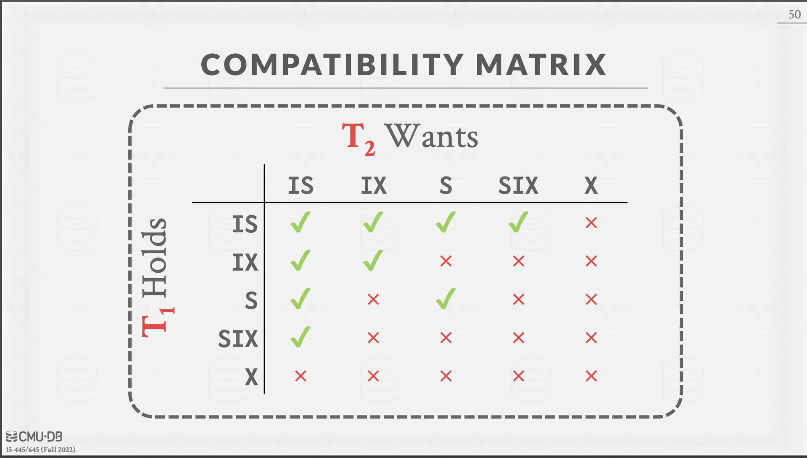

Lectures: https://15445.courses.cs.cmu.edu/fall2022/schedule.html
Assignments: https://15445.courses.cs.cmu.edu/spring2023/assignments.html
1 : Relational Model & Relational Algebra
Inventor of Relational Model : Edgar Frank “Ted” Codd at IBM
-
Derivability, Redundancy and Consistency of Relations stored in Large Data Banks
-
Relation / Table : Unordered set containing relationship of attributes that represent an entity.
-
Tuple / Row / Record : Set of attribute values (domain) in the relation.
-
Primary key identifies a single tuple.
-
Data Manipulation Languages (DML)
- Procedural : Relational Algebra
- Declarative (like SQL) : Relational Calculus
Relational Algebra
- Based on Sets
- Basic Operators: Select, Projection, Union, Intersection, Difference, Product, Join
- Projection: Generate relation with tuples that only contain the specified attributes. Can rearrange ordering of attributes & can manipulate the values.
Fun Fact: SQL was Sequel (Structured English Query Language) initially but IBM had to change the name after they got sued.
2 : Modern SQL
- SQL is a combination of
- Data Manipulation Language (DML) : retrieve or modify data
- Data Definition Language (DDL) : specify what data looks like, indexes, namespaces, triggers, functions
- Data Control Language (DCL) : access control
- SQL is not based on sets (no duplicates) but on bags (can have duplicates).
3 : Database Storage 1
-
Sequential access can be faster than random access
- Case in point: Think about getting 1MB of data that is contiguously laid out
- Sometimes algorithms might seem slow on paper but we want to optimise for sequential access in DBMS.
-
“Memory” in this course will refer to DRAM.
-
Disk Oriented DBMS
- Disk: Blocks/Pages
- Memory: Buffer Pool / Page Cache / Buffer Manager
-
We don’t want to rely on the OS to do anything apart from giving the DBMS memory and not letting the process get killed.
mmap
- mmap can store contents of a file into the address space of a program but it has some issues.
- Transaction Safety : OS can flush dirty pages at any time (you might not want to save changes yet if you’re updating multiple pages but the OS will flush the pages and lead to corrupt data).
- I/O Stalls : DBMS doesn’t know which pages are in memory so it’ll get a page fault every time it tries to access a page not in memory & be stalled by the OS then.
- Error Handling : Difficult to validate pages (DBMS can maintain checksums if it is controlling read, writes unlike mmap).
- Performance Issues : OS has it’s own data structure for page table which can become a bottleneck.
- mmap might be okay for really light workloads on small DBs. It’s quick and easy to start with.
- Sidenote: mmap is used by elasticsearch, leveldb ; sqlite also partially uses mmap ; mmap was partially used by mongodb earlier but they stopped using it since they faced problems.
- For more info on why you shouldn’t use mmap for a DBMS: Read https://db.cs.cmu.edu/mmap-cidr2022/
How the DBMS represents the database in files on disk
- File Storage
- A file is a collection of pages.
- Page is a fixed-size block of data.
- Page can also have metadata about itself.
- Different notions of “pages” in a DBMS
- Hardware : usually 4KB
- OS : usually 4KB
- Database : 512B - 16KB
- A hardware page is the largest block of data that the storage device can guarantee failsafe writes.
- We want to keep OS pages larger to make less syscalls for read/writes. We also don’t want to enlarge it too much since then we’ll be fetching unnecessary data.
- A file is a collection of pages.
- Page Storage Architecture
- Heap
- unordered collection of pages
- support create, get, write, delete, iteration over pages
- page directory are special pages which track location of data pages in DB files
- a data pages being self-contained (having metadata about it’s location, table etc.) can help in data recovery if something happens to page directory
- Tree
- Sequential / Sorted
- Hashing
- Heap
- Some reasons for storing things in small files
- easier to obtain a lock on specific data
- reduces the blast radius if a single file gets corrupted or deleted
- we can symlink particular directories on a faster disk for faster access
- Page Layout
- Log Oriented
- Tuple Oriented
- Strawman Idea: Keep track of number of tuples in a page and then just append a new tuple to end.
- Issues
- Deleting a tuple
- If a tuple is deleted from between, there’s no way to know that free space is available there for putting a tuple in
- Variable-length attribute
- Allocating empty space is wasteful
- Deleting a tuple
- Issues
- Slotted Pages
- Slot Array in the beginning of the page maps to the starting positions of the tuples. (Also contains tuple size)
- Slot Array grows from beginning to end. Tuple data grows from end to beginning.
- We consider the page full when we can’t enter any more slots or tuples.
- Header keeps track of number of used slots.
- You can readjust tuple locations if you want to on deletion to reduce fragmentation in a particular page.
- You can use other compaction processes to reduce the amount of space required.
- Record Ids : DBMS needs a way to keep track of individual tuples. Each tuple has unique record id.
- simple method: page_id + offset/slot
- can also contain file location info
- also: see ctid in postgres (you can query it)
- VACCUM in pg would does the re-adjustment of deleted rows
- sqlite has rowid
- pg’s auto-vaccum keeps tracks of pages changes since last Vaccum & then compacts only those pages
- pages can also be merged together if they’re half-full
- Strawman Idea: Keep track of number of tuples in a page and then just append a new tuple to end.
- Tuple Layout
- Tuples also have a header which can store visibility info & bit map for null values in the data attributes.
- For variable length data, you can also have pointers to some other location stored in the tuple.
- Misc
- Postgres does MVCC the wrong way:
- To Read: https://db.cs.cmu.edu/papers/2017/p781-wu.pdf
- “An Empirical Evaluation of In-Memory Multi-Version Concurrency Control” by Andrew Pavlo
- To Read: https://db.cs.cmu.edu/papers/2017/p781-wu.pdf
- Quotes from Chapter 12 (12.1 - 12.4)
- “Requests for disk I/O are typically generated by the file system but can be generated directly by the database system. Each request specifies the address on the disk to be referenced; that address is in the form of a block number. A disk block is a logical unit of storage allocation and retrieval, and block sizes today typically range from 4 to 16 kilobytes. Data are transferred between disk and main memory in units of blocks. The term page is often used to refer to blocks”
- “In a sequential access pattern, successive requests are for successive block numbers, which are on the same track, or on adjacent tracks. To read blocks in sequential access, a disk seek may be required for the first block, but successive requests would either not require a seek, or require a seek to an adjacent track, which is faster than a seek to a track that is farther away.”
- “In contrast, in a random access pattern, successive requests are for blocks that are randomly located on disk. Each such request would require a seek.”
- I/O operations per second (IOPS) : “number of random block accesses that can be satisfied by a disk in a second”
- “Compared to magnetic disks, SSDs can provide much faster random access: the latency to retrieve a page of data ranges from 20 to 100 mi- croseconds for SSDs, whereas a random access on disk would take 5 to 10 milliseconds.”
- TODO: Read about RAID in Chapter 12
- Postgres does MVCC the wrong way:
4 : Database Storage 2
- Last Lecture: Disk Oriented DBMS -> Page Oriented Architecture
- Issues with Slotted Page Design
- Fragmentation (may not get entire tuple in a single page, may need to update multiple pages)
- Useless Disk I/O (page may have data we don’t care about which we’ll need to read since we can’t get exact bytes)
- Random Disk I/O (eg: tuples that need to updated may reside on different pages)
- Note to Remember: Sequential I/O is great for non-volatile storage compared to random access.
Log Structured Storage
- What if DBMS couldn’t overwrite data in pages & could only create new pages?
- Eg: AWS S3, HDFS
- (Think of just a key-value store here, PUT contains the entire value that needs to be stored)
- DBMS stores log records that contain changes to tuples (PUT, DELETE).
- Each log record must contain the tuple’s unique id.
- Put records contain the tuple contents.
- Deletes marks the tuple as deleted.
- When the page gets full, the DBMS writes it from in-memory page out to disk.
- Writes are batched (in-memory page is fast, updating 20 tuples at once just involves appending the changes to log now)
- Getting a tuple with some Id
- Scanning log from newest to oldest is slow
- Maintain an index mapping tuple id to newest log record for that id
- Compaction
- Merging pages to reduce the amount of space taken up by actions on the same tuple id.
- TODO: Write a simple script that merges two files with data in the format: ACTION ID Value(if applicable)
- After a page is compacted, the DBMS doesn’t need to maintain temporal ordering of records within the page since each tuple id appears at most once in the page.
- (We don’t need to track deletes post compaction, could just remove the key from index)
- DBMS can sort page by id to improve lookup. See SSTables.
- Types of Compaction
- Universal : combine 2 contiguous sorted files
- Level : Files of same “level” are compacted one by one as they move up each level. (used by LevelDB & it’s fork RocksDB)
- Eg: RocksDB, LevelDB, Apache HBASE, Fauna, AWS Aurora etc.
- Downsides
- write-amplification : same record is getting compacted multiple times even if it doesn’t change
- compaction is expensive
- Tuple Storage
- DBMS catalogs contain schema info about tables that is used to figure out tuple’s layout.
- Data Representation
- Common Types: Integers, Floats or Numeric/Decimal, Varchar or Blob, Time
- Variable Precision Numbers, Fixed Precision Numbers
- Handling fixed precision numbers is slow
- Large values (like Varchar) that are larger than a page use separate overflow storage pages. Fields in tuple point to these overflow pages instead of storing the data in the tuple itself.
- Number of columns is also limited since a tuple can’t exceed the size of the page in most DBMS.
- Some systems allow storing really large value in external files. DBMS can’t update the contents of these files.
- Paper Suggestion: ‘To Blob or Not to Blob: Large Object Storage in a Database or a Filesystem” by Jim Gray
Quotes from Chapter 24 (24.2)
- “B+-tree indices are not efficient for workloads with a very high number of writes” Why?
- “The key idea of the log-structured merge tree (LSM tree) is to replace random I/O operations during tree inserts, updates, and deletes with a smaller number of sequen- tial I/O operations.”
- Index Inserts & Lookups
- “An LSM tree consists of several B+-trees, starting with an in-memory tree, called L0, and on-disk trees L1, L2, … , Lk for some k, where k is called the level.”
- “An index lookup is performed by using separate lookup operations on each of the trees L0, … , Lk, and merging the results of the lookups.”
- “When a record is first inserted into an LSM tree, it is inserted into the in-memory B+- tree structure L0. A fairly large amount of memory space is allocated for this tree.” How much space though?
- “As the tree grows to fill the memory allocated to it, we need to move data from the in-memory structure to a B+-tree on disk.”
- If L1 is empty the entire in-memory tree L0 is written to disk to create the initial tree L1.
- If L1 is not empty, the leaf level of L0 is scanned in increasing key order, and entries are merged with the leaf level entries of L1. The merged entries are used to create a new B+-tree using the bottom-up build process. The new tree with the merged entries then replaces the old L1.
- All entries in the leaf level of the old L1 tree, including those in leaf nodes that do not have any updates, are copied to the new tree instead of being inserted into the existing L1 tree node.
- The leaves of the new tree are sequentially located, avoiding random I/O during subsequent merges.
- The leaves are full, avoiding the overhead of partially occupied leaves that can occur with page splits.
- “Cost to using the LSM structure: the entire contents of the tree are copied each time a set of entries from L0 are copied into L1.”
- “To ensure we get a benefit for cases where the index size on disk is much bigger than the in-memory index, the maximum size of L1 is chosen as k times the target size of L0, for some k. Similarly, the maximum size of each Li+1 is set to k times the target size of Li. Once a particular Li reaches its maximum size, its entries are merged into the next component Li+1. When Li+1 reaches its target size, its entries are in turn merged into Li+2, and so on.”
- “We assumed for simplicity that when a particular level is full, its entries are entirely merged with the next level. This would result in more I/O load during merges with an unused I/O capacity between merges. To avoid this problem, merging is done on a continuous basis; this is called rolling merge. With rolling merge, a few pages of Li are merged into corresponding pages of Li+1 at a time, and removed from Li.”
5 : Storage Models & Compression
- DB Workloads
- OLTP
- OLAP
- Hybrid (OLTP + OLAP) (also called HTAP)
- Row OR n-ary storage model (NSM) : Data pertaining to a specific record is packed together on a page
- Good for OLTP workloads since we usually require a lot of attributes at once
- Bad for OLAP workloads since we’d need to check every page even for an analysis on a single attribute
- Column OR Decomposition Storage Model (DSM) : The values for an attribute are stored together one after another.
- Tuple Identification
- Fixed-length Offsets (used by most systems)
- Embedded Tuple Ids
- Offsets for each column are stored for a tuple id in a lookup table.
- DBMS only reads the data it needs.
- Slow for point queries, inserts, updates, deletes because of tuple splitting / stitching.
- Tuple Identification
- Vertica (a column store) is a fork of Postgres rewritten as a column storage system.
- Sybase (an older system made in the 90s) was an in-memory column store working on-top of a row store for faster query results.
- I/O is the primary bottleneck in fetching data. Compressing the DB reduces DRAM requirement. It may decrease CPU costs during query exec.
- There can be many repeated values in a single DB attribute.
- Goals for DB Compression
- Produce fixed-length values. (Variable length data can be stored in separate pool)
- Postpone decompression for as long as possible during query exec (late materialization)
- Must be lossless
- Compression Granularity
- Block
- Tuple (NSM only)
- Attribute
- Column (DSM only)
Naive Compression
- DB doesn’t know about the data
- Things to consider: Computation overhead, Compress vs. Decompress speed
- MySQL InnoDB Compression
- Default size is 16KB
- Pages are compressed & then padded to nearest power of 2 (1, 2, 4, 8 KB)
- Page goes to buffer pool when it needs to be used
- Update queries won’t necessarily need to know the previous value. If an update just appends the value to the page it can be put after the compressed data in the page & metadata can store offsets for compressed & non-compressed data.
- DBMS must decompress data first before reading & (potentially) modifying it. Naive schemes also don’t consider high-level semantics of the data.
Columnar Compression
- Run-length Encoding
- data to be sorted for max compression
- value -> (value, start offset, # of elements in the run)
- works for highly categorical data (eg: list of values with genders as M/F/Other)
- Bit-packing
- store value as smaller data type (eg: int64 -> int8) if the value doesn’t need the full size
- DBs handle the conversion during aggregations. TODO: check in detail
- A marker is stored for larger values (eg: larger than int8) which maps to a separate lookup table.
- Bitmap
- If number of distinct values is low (i.e. value cardinality is low), each unique value can be stored as a bitmap
- i-th position in bitmap corresponds to i-th tuple
- Delta
- Instead of storing all values, record the difference in values
- Can combine w/ RLE to get better compression ratios if repetition is likely
- Eg: temperature stored as
99, +1, +1instead of being stored as actual values99, 100, 101
- Incremental
- Type of delta compression that avoids storing common prefix / suffix b/w consecutive tuple.
- Eg: rob, robbed, robbing, robot -> rob, 3bed, 4ing, 3ot (common prefix: “rob” -> “robb” -> “rob”)
- Dictionary
- Map variable length values to a small int identifier
- Lookups for data can use the compressed data instead of the actual value if the DB is aware. For eg: If a string “Andrea” is mapped to an int “30” then the DB can look for that value without decompressing the data.
- This isn’t hashing since the dict needs to support both encoding, decoding.
- Order Preserving Encoding (sort and assign keys basis sorted order) for queries like “find greater than some value”, “find value that starts with xyz”
- How would we handle new values?
- We don’t do this in OLTP due to the large number of separate inserts which would make the sorted order useless.
- Cleanup & regeneration can happen in OLAP (still expensive)
- IDEA: What if we use floats and store the new values at half of 2 values in a row? (We’d eventually run out, larger float types also take a lot of space, plus they aren’t precise)- TODO: Compress the works of Shakespeare (publicly available) from scratch. Compare with production algorithms.
6 : Memory Management
- How the DBMS manages its memory and moves data back & forth from disk?
- Goal: Build DB that can store more data than memory available to it.
- Spatial Control (layout of data on device), Temporal Control (when to read from, write data to disk)
Buffer Pool Manager
- Also knows by : Buffer Manager / Page Cache / Buffer Cache
- Memory regions organised as array of fixed size pages. Each entry in the array is called frame.
- When DBMS requests a page, an exact copy is placed into one of these frames.
- Dirty pages are buffered & not written to disk immediately. (Write back cache)
- Dirty Page : it is different from its corresponding page on disk.
- Page table keeps track of pages currently in memory along with metadata like dirty flag, pin/reference counter for each page.
- Dirty flag tells if the page has been modified by a query & not saved to disk yet.
- Sidenote: DB waits for entry to be written to the log page before it makes changes in the table page.
- Pin prevents buffer pool from evicting the page when you’re running a query that’ll need the page. Pin counter tracks how many queries are using the particular page.
- Latch can be acquired on page table for a page that’ll prevent other thread from using the same page & overwriting it.
- Lock Vs Latch
- Lock
- protects DB’s logical contents from other transactions
- held for transaction duration
- need to be able to rollback changes
- Latch
- protects critical sections of DB’s internal data structure from other threads
- held for operation duration
- don’t need to be able to rollback changes
- mutex
- Lock
- Lock Vs Latch
- Why not use a hashmap instead of maintaining 2 tables?
- Prof mentions that the page table is like a hashtable only.
- Dirty flag tells if the page has been modified by a query & not saved to disk yet.
- Do we lose the contents of buffer pool on crash? Yes
- Prof mentions that we want to do this for correctness reasons. Why?
- Page Table Vs Page Directory
- Page directory is the mapping from page ids to page locations in the DB files. (on disk)
- Page table is the mapping from page ids to a copy of the page in buffer pool frames. (in memory)
- Allocation Policies
- Goal: Evicting, Pre-fetching, Writing optimally
- Global Policies
- Local Policies
Buffer Pool Optimisations
- Multiple Buffer Pools (per DB, table, index and so on)
- also improves latch contention
- approaches:
- maintain an object id that points to specific buffer pool
- use hashing to select the buffer pool
- Pre Fetching
- Sequential Scans
- Index Scans
- Scan Sharing / Synchronised Scans
- different from result caching
- allow multiple queries to attach to a single cursor that scans a table
- queries don’t need to be the same
- can also share partial results
- Buffer Pool Bypass (using private buffer pool)
- avoids overhead of using the buffer pool (like acquiring latch, getting frames etc.)
- memory is local to running query (can’t be shared across queries)
- works well if operator needs to read large sequence of contiguous pages on disk
- can also be used for temporary data
- OS Page Cache (specific to Postgres)
- OS maintains its own filesystem cache (aka page or buffer cache)
- Most DBMS use direct I/O (using O_DIRECT) to bypass OS cache.
- prevents redundant copies
- OS has different eviction policies
- loss of control over file I/O
- Sidenote: Amazon’s pg fork (Aurora) doesn’t use OS’s page cache.
- EXPLAIN (BUFFER) (sql statement here)
- pg_prewarm
Buffer Replacement Policies
- Which page to evict from buffer pool when freeing up frames?
- LRU
- Clock (like LRU)
- pages organised in circular buffer
- each page has a reference bit which is set to 1 when page is accessed
- when the clock hand moves to the next page
- if ref bit 0 then evict
- if ref bit 1 then set to 0
- Issue with LRU, Clock
- Susceptible to sequential flooding (query does sequential scan which pollutes the buffer pool with pages that might not be read again)
- LRU-K
- tracks history of last K refs to each page as timestamps & compute the interval b/w subsequent access
- history is used to estimate the next time page is going to be accessed & eviction is done basis that
- Priority Hints
- DBMS can provided hints on whether page is important or not to buffer pool
- Dirty Pages
- in the buffer pool, if a page
- isn’t dirty: drop it (fast path but might need this page soon)
- is dirty: need to write back to disk (slow path & might not need page in near future)
- which to drop? tradeoff b/w fast eviction vs. dirty writing page not needed in future
- DBMS can periodically walk through the page table and write dirty pages to disk to optimise this
- in the buffer pool, if a page
- Other Memory Pools
- for sorting+join buffer, query cache, maintenance buffer, log buffer, dictionary cache
- might not be backed by disk
7 : Hash Tables
- Course Progress (bottoms-up)
- Disk Manager -> Buffer Pool Manager -> Access Methods -> Operator Execution -> Query Planning
- How to support DBMS’s execution engine to read/write data from pages?
- Data Structures: Hash Tables, Trees
- Usage of Data Structures: Internal Meta-data, Core Data Storage, Temp. Data Structures, Table Indexes
- Design Decisions: Data Organization (in pages / memory), Concurrency
- Hash Table: unordered. associative array mapping key to value, uses hash function to compute offset into this array for given key
- Space Complexity: O(n), Time Complexity: Average: O(1), Worst: O(n)
- Note: the position in the array points to some external storage area with the actual keys
- Simple Hash Table
- allocate giant array that has 1 slot for every element you need to store
- issues
- we need to know the no. of key ahead of time
- hash function needs to be perfect i.e. for no key1, key2: hash(key1) != hash(key2)
- we have to guarantee key uniqueness
- Design Decisions
- Hash Function: map a large key space into a smaller domain
- trade-off: being fast vs. collision rate
- Hashing Scheme: handle key collisions after hashing
- trade-off: allocating a large hash table vs. additional instructions for update/retrieval of keys
- Best currently as per Andy: xxHash (used in a lot of DBs)
- Hash Function: map a large key space into a smaller domain
- Hash Functions
- for any input key, return an integer representation of that key
- why not use SHA or other crypto hash functions? we don’t have security concerns since these are keys in an internal data structure, the extra overhead & loss of performance isn’t worth it
Static Hashing Schemes
- Linear Probe / Open Address
- giant table of slots
- resolves collisions by linearly searching for the next free slot in the table
- Insertion
- jump to next free slot, loop around if at end
- note: lookup stop when you either find the key, loop back to start of search, or find out the location and you know it can’t be there (how??)
- Deletes (handling what happens when you delete a key from a lot)
- Movement: slide keys up after rehashing (costly)
- Tombstone: set a marker to indicate that the entry in the slot is logically deleted
- slot can be re-used for new keys
- may need periodic garbage collection
- Non Unique Keys (eg. usage: using hashtable for joins)
- Separate Linked List : store values in separate storage area for each key
- Redundant Keys: store duplicate keys entries together in the hash table
- easier to implement so this is what most systems do
- check is key exists: find first key
- deletion: delete all keys
- Sidenote: name of column and record id together can be used to guarantee uniqueness of keys
- Robin Hood Hashing
- stealing slots from “rich” keys and giving them to “poor keys”
- insertion: a key takes slot from another if the first is farther from its optimal position than the latter
- each key tracks the no. of positions they’re from their optimal position in the table
- the number of “shifts” from ideal position determines how poor the key is
- a key inserted at ideal position has a counter of 0
- similarly a key that had to shift twice has the counter of 2
- more the counter, poorer the key is
- if the key being inserted has a larger counter than key already in place then the key already in place is shifted
- tradeoff: lots of shuffling can occur on insertion but this can make reads slightly faster | linear hashing is faster and easier for most cases
- a key inserted at ideal position has a counter of 0
- Cuckoo Hashing
- used in a lot of systems
- use multiple hash tables with different hash function seeds
- insertion: check every table & pick anyone that has a free slot
- if no table has a free slot, evict element from one of them and then re-hash it find a new location
- you need to keep track that you’re not in a cycle
- Good OSS implementation: https://github.com/efficient/libcuckoo
- What happens if you can’t find a new slot using any of the available hash functions? Allocate a new table 2x the size of previous. Re-insert all keys in new hash table.
- (A new hash function might work too but implementations don’t do this)
- Why is it not considered dynamic if it can allocate a new table?
- The process is not incremental (eg: think of re-allocating an array in C to insert more elements)
Dynamic Hash Tables
- Static hashing schemes require the DBMS to know the number of elements it wants to store
- Table needs to be rebuilt on growth/shrinkage in size
- Resize on demand without complete re-allocation
- Chained Hashing
- linked list of buckets for each slot in hash table
- resolve collisions by placing all elements with the same hash key into the same bucket
- new bucket is allocated when a bucket is full
- Extendible Hashing
- split buckets instead of letting the linked list grow forever
- multiple slot locations can point to the same location
- reshuffle bucket entries on split and increase the no. of bits to examine
- eg: no. of bits increasing : 00, 01, 10, 11 -> 000, 010, 100, 110, 001, 011, 101, 111
- example of hashed keys: 011100, 10111, 10110
- Linear Hashing (slightly confusing, read about it somewhere else)
- hash table maintains a pointer that tracks the next bucket to split
- when any bucket overflows, split the bucket at the pointer location (not the bucket that overflowed) (in preparation for future)
- the overflowed bucket is extended
- when any bucket overflows, split the bucket at the pointer location (not the bucket that overflowed) (in preparation for future)
- use multiple hashes to find the right bucket for a given key
- new hash function is used at/below the split pointer
- splitting buckets based on the split pointer will eventually get to all overflowed buckets
- when the ptr reaches the last slot, delete the first hash function and move back to beginning
- eg:
- hash functions: key % n, key % 2n, key % 4n
- if you started out with 4 bucket lists, you’d have 8 bucket lists after splitting (slide has 5 because of no space)
- Note: Deletion was skipped in lecture. See slides or notes.
- hash table maintains a pointer that tracks the next bucket to split
- Sidenote: Hash table isn’t what you want to use for a table index. Why?
8 : B+ Tree Index
- Table indexes mainly use B+ trees
- Table index: replica of a subset of a table’s attributes that are organized and/or sorted for efficient access
- Trade-off for no. of indexes to create per DB: storage & maintenance overhead
- In OLAP DBs: indexes are primarily used for speeding up joins in smaller tables
- B-tree family: B-Tree, B+ Tree, B* Tree, Blink-Tree
- pg uses B+ trees, much like other DBs
- Note: A slightly modified kind of B+ tree structure is discussed. (Not the original one from the paper)
- B+ tree is self-balancing tree, keeps data sorted
- Operations: Search, Sequential Access, Insertion, Deletion in O(logn)
- Optimized for systems that read & write large blocks of data
- Node can have > 2 children
M-way search tree??- Properties
- Perfectly balanced (every lead node is at the same depth in a tree)
- Every node other than the root is at least half-full
M/2 - 1 <= #keys <= M-1
- Every inner node with
kkeys hask+1non-null children - Some implementations can be slightly different. Doesn’t matter as long as the operations are O(logn)
- B+ tree node comprises of an array of key/value pairs.
- Keys are derived from attribute(s) that the index is based on.
- The values will differ based on whether the node is classified as “inner node” or “leaf node”.
- The arrays are usually? kept in sorted order.
- Inner node can have a key that’s deleted since they act like guide posts. Leat nodes can’t have deleted keys.
- Leaf Node Values
- Approach 1 (Record IDs) : a ptr. to the location of the tuple to which the index entry corresponds
- extra lookup
- done by: pg, sql server, db2, oracle
- Approach 2 (Tuple Data): leaf nodes store actual content of the tuple
- extra overhead: secondary indexes must store the record IDs as their values
- done by: sqlite, sql server, mysql, oracle
- Approach 1 (Record IDs) : a ptr. to the location of the tuple to which the index entry corresponds
- B-tree vs. B+ tree
- B-tree stores keys & values in all nodes in tree
- space efficient (since each key only appears once)
- range scans are expensive compared to B+ tree since leaf nodes are sequential
- B-tree stores keys & values in all nodes in tree
- B+ Tree
- See https://www.cs.usfca.edu/~galles/visualization/BPlusTree.html
- Max Degree = Max Keys Per Node + 1
- Operations: Insert, Delete, Lookup
- DBMS can use a B+ tree index if the query provides any of the attributes of the search key
- Eg: Index on <a,b,c>
- Conjunction: (a = 1 AND b = 2 AND c = 3)
- Partial: (a = 1 AND b = 2)
- Suffix: (b = 2), (c = 3)
- Find (A, B) ; (A, *), (*, A)
- Eg: Index on <col1, col2, col3>
- Column Values: {A, B, C, D}
- Search: col2 = B;
- Eg: Index on <a,b,c>
- Duplicate Key Handling
- Approach 1 : Append Record ID
- Add tuple’s unique Record ID as part of the key to ensure that all keys are unique
- DBMS can use partial keys to find tuples.
- pg does this
- Approach 2 : Overflow Leaf Nodes
- Let leaf nodes to spill into overflow nodes that contain the duplicate keys.
- Complex to maintain.
- Approach 1 : Append Record ID
- Clustered Indexes
- table is stored in order specified by the primary key
- some DBs always use a clustered index while others can’t use them at all
- pg doesn’t maintain the clustered index once done
- mysql maintains clustered indexes automatically for primary keys (why can it?)
- You can specify BTREE or HASH in pg while creating the index
- Recommended Book on BTrees: Modern BTree Techniques (Goetz Graefe)
- Design Decisions while Implementing BTrees
- Node Size
- as per research: slower the storage device, larger the optimal node size for B+ Tree
- HDD: ~1MB, SSD: ~10KB, In-Memory: ~512B
- we want to maximize the sequential IO we’re doing
- can also vary per workload
- root to leaf traversal : small node sizes
- range scans : large node sizes
- as per research: slower the storage device, larger the optimal node size for B+ Tree
- Merge Threshold
- some dbms don’t always merge nodes when they’re half full & delay it
- to reduce the amount of re-organization
- it might be better to let smaller nodes exists & periodically rebuild the entire tree
- some dbms don’t always merge nodes when they’re half full & delay it
- Variable Length Keys
- Pointers : store key as pointers to the tuple’s attribute
- bad in a disk based system since we’d need to fetch each key using the ptr for comparison while traversing
- in memory based systems (esp. when there’s less memory), this approach prevents duplication
- a variant of b-tree called t-tree does this
- Variable Length Nodes
- requires careful memory management
- Padding : pad the key to be max length of the key type
- mysql does this
- Key Map / Indirection
- embed an array of pointers that map to the key + value list within the node
- store an fixed length int instead of the key & map it to the key
- kinda like dictionary compression
- Pointers : store key as pointers to the tuple’s attribute
- Node Size
- Intra Node Search
- Linear
- SIMD (Single Instruction/Multiple Data) can be used to speed this up
- Binary
- data needs to be sorted for this
- Interpolation (fastest)
- approx. location of desired key based on known distribution of keys
- data should be sorted
- note: this hasn’t been widely implemented outside academia
- Linear
- Optimizations
- Buffer Updates : instead of applying the change right way, keep a log and apply the changes after a while (fractal tree index)
- Prefix Compression (like incremental compression in Lecture 5)
- Deduplication : avoid storing multiple copies of same key in leaf nodes; store key once & maintain a list of tuples with that key (similar approach as hash tables)
- Suffix Truncation: we don’t need entire keys in inner nodes, just need a minimum prefix to correctly route probes into the index
- Pointer Swizzling
- store ptrs instead of page id to avoid the address lookup from the page table if a page is pinned in the buffer pool
- some extra metadata needs to be tracked so that we know when a page is unpinned & we can’t use the ptr anymore
- Bulk Insert
- fastest way to build a new B+ tree for an existing table is to first sort the keys & then build the index from bottom up
9 : Index Concurrency Control
- Single Threaded Engines: VoltDB (by Andy), Redis
- Concurrency Protocol : method that DBMS uses to ensure “correct” results for concurrent operations on a shared object
- Correctness Criteria
- Logical Correctness : can a thread see the data it’s supposed to see?
- if I insert a key, can I read it back?
- Physical Correctness : is the internal representation of the object sound?
- pointers aren’t invalid, data is correct etc.
- Logical Correctness : can a thread see the data it’s supposed to see?
- Focusing on Physical Correctness in this lecture.
Locks vs. Latches
| _ | Locks | Latch |
|---|---|---|
| Separate | User Transactions | Threads |
| Protect | DB Contents | In-Memory Data Structures |
| During | Entire Transactions | Critical Sections |
| Modes | Shared, Exclusive, Update, Intention | Read, Write |
| Deadlock | Detection & Resolution | Avoidance |
| Deadlock By | Waits-for, Timeout, Aborts | Coding Discipline |
| Kept In | Lock Manager | Protected Data Structures |
-
Latch Modes
- Read : multiple threads can read the same object at the same time
- Write : only 1 thread can access the object
- if a thread a acquired a write latch, other threads can’t read or write
-
Latch Implementations
- Blocking OS Mutex
- non-scalable: about 25ns per lock/unlock invocation
- eg: std::mutex in C++ -> pthread_mutex -> futex
- futex : fast user mutex (user space spinlock)
- if fail to acquire then fall back to heavyweight mutex
- Reader-Writer Latches
- allows for concurrent readers
- must manage r-w queues to avoid starvation
- can be implemented on top of spinlocks
- eg: std::shared_mutex in C++ -> pthread_rwlock
- Sidenote: A lot of production systems have their own latches instead of using the one provided by the OS.
- Blocking OS Mutex
-
Hash Table Latching
- all threads move in same direction & only access single page/slot at a time
- deadlocks aren’t possible
- sidenote: take a global write latch on the entire table while re-sizing
- Approaches (note: pages have slots in them)
- Page Latches
- each page has its own r-w latch that protects its entire contents
- less metadata storage overhead but reduced amount of parallelism
- Slot Latches
- each slot has its own latch
- Page Latches
B+ Tree Concurrency Control
- Latch Crabbing / Coupling
- Protocol to allow multiple threads to access / modify B+ Tree at the same time.
- Get latch for parent
- Get latch for child
- Release latch for parent if “safe”
- Safe node: won’t split or merge when updated i.e.
- not full (for insertion)
- more than half-full (for deletion)
- Releasing latches from top-to-bottom allows other threads to proceed with their request faster compared to doing to bottom-to-top.
- Protocol to allow multiple threads to access / modify B+ Tree at the same time.
- Acquiring a write latch on root node everytime is a major bottleneck.
- Optimization
- assume that most modifications to a B+ Tree won’t require a split or merge
- take read latches from top to bottom & when you reach the leaf node then determine if your assumption is correct or not
- if correct: take write latch on leaf node, perform operation
- if not: release all latches, start search from start again but use the pessimistic algorithm (discussed above) this time
- Sidenote: What about lock-free data structures?
- Don’t work that well under high contention.
- Mentioned: Trying out an implementation of Microsoft’s B-W tree against a B+ Tree. B+ Tree was faster. Also mentioned that skip-list (which is latch free) is also slower than a good B+ Tree.
- B-W Tree has a separate lookup table with tree node ids & that extra lookup reduces performance.
- Optimization
- What if threads want to move from one leaf node to another? (Leaf Node Scan)
- There’s potential for deadlocks now compared to when we were just moving top to bottom.
- For a scan, once we’ve reached the leaf node level, we can acquire read latches in the same way on siblings (and release them) as we were doing in top->bottom latch crabbing.
- Consider 2 parallel readers in opposite directions, if they intersect while scanning, it’s not an issue because a node can have multiple read latches & once they move across each adjacent node will only have a single read latch.
- Now consider one scan & another delete operation. The reader can’t acquire a read latch on the leaf node with the key that’s going to be deleted if the deleter acquired a write latch on it first.
- We’d wait for very little time and then abort the read.
- Note: If the reader acquired the read latch earlier on the “to-be-deleted” node then we won’t have an issue. After the read, the deleter will delete the node.
- Suggestion from students: Jitter in timeouts, Drop readers since they’re less costly
- Latches don’t support deadlock detection or avoidance.
- The leaf node sibling latch acquisition protocol must support a “no-wait” mode.
- DBMS’s data structures should cope with failed latch acquisitions.
10 : Sorting & Aggregations Algorithms
- Disk Manager -> Buffer Pool Manager -> Access Methods (scanning indexes, scanning the table itself) -> Operator Execution -> Query Planning
- Focus on executing queries using the DBMS components built so far.
- Operator Algorithms, Query Processing Models, Runtime Architectures
- SQL Statement -> AST -> DAG
- We can’t assume that query results necessarily fit in memory. Buffer Pool will be used to implement algorithms that need to spill to disk.
- Again, prefer algorithms that maximize sequential I/O.
- Sidenote: Mentioned using “kernel bypass” instead of OS APIs to do I/O.
Sorting
- Why do we need to sort?
- Relational model is unsorted. Queries can request sorted data.
- For operations like duplicate elimination (DISTINCT), aggregations (GROUP BY), bulk loading sorted tuples into B+ Tree index.
- In-Memory Sorting: Any standard sorting algorithm like quicksort.
- Quicksort would do random I/O on pivots which isn’t preferable for sorting involving disk.
- Top-N Heap Sort (Special case)
- If a query contains an
ORDER BYwith aLIMIT, then the DBMS only needs to scan the data once to find the top-N elements. - Ideal scenario for heapsort if the top-N elements fit in memory
- Scan data once, maintain an in-memory sorted priority queue
- pg does this
- If a query contains an
- External Merge Sort (Common)
- Divide and conquer algorithm.
- Split data into runs (chunks of data that fit in-memory) -> Sort each run individually & write it back to disk -> Combine into longer sorted chunks
- Sorted Run
- A run is a list of key-value pairs.
- Key : Attribute(s) to compare to decide the sort order.
- Value: Early vs Late Materialisation
- Eg: If you’re sorting an Employee table by Salary then “Salary” would be the key & the Record ID or the corresponding Tuple would be the value.
| Early Materialisation | Late Materialisation |
|---|---|
| Store the tuple | Store record ID |
| Need to copy the values multiple times during the sort | - |
| Data can be readily sent back to the client | Data needs to be fetched using the record IDs when sending back |
| - | If a lot of data is filtered out then we didn’t waste space or memory storing unnecessary values |
| ? | Common in column stores |
- 2-Way External Merge Sort
- “2” is the no. of runs to be merged into a new run for each pass.
- Data is broken up into N pages.
- DBMS has a finite no. of B buffer pool pages to hold input and output data.
- Note: sortmemory is configurable in databases
- In each pass, we read & write every page in the file
- Number of passes: 1 + ⌈log2N⌉
- Total I/O cost: 2N * (# of passes)
- This algorithm requires only 3 buffer pool pages (2 input, 1 output)
- It doesn’t effectively utilise additional buffer space (if available).
- Double Buffering Optimization : Prefetch the next run in the background & store it in a 2nd buffer while the system is processing the current run.
- Reduces wait-time for I/O requests at each step by continuously utilizing the disk.
- General External Merge Sort
- Pass #0
- Use B buffer pages
- Produce ⌈N / B⌉ sorted runs of size B
- Pass #1,2,3
- Merge B-1 runs
- No. of passes = 1 + ⌈ logB-1⌈N / B⌉⌉
- Total I/O Cost = 2N * (# of passes)
- Note: We were ignoring the constant factor B in the 2-way external merge sort
- Pass #0
- Comparison Optimizations
- Code Specialization: instead of providing a comparison function as a pointer to the sorting algorithm, create a hardcoded version of sort that is specific to a key type.
- If everything fits in memory then following the ptr to the function is costly.
- In some systems, you can build out specialized version of the sorting algorithm where comparison functions are hard-coded in the sorting algorithm itself.
- Mentions Just-In-Time compilation
- pg does this
- Suffix Truncation: Compare a binary prefix of long VARCHAR keys instead of slower string comparison. Fallback to slower version if prefixes are equal.
- Code Specialization: instead of providing a comparison function as a pointer to the sorting algorithm, create a hardcoded version of sort that is specific to a key type.
- Using B+ Trees for Sorting
- If the table already has an index on the sort attribute(s), we can use it to accelerate sorting by retrieving tuples in desired sort order by traversing the leaf pages of the tree.
- Cases
- Clustered B+ Tree
- Traverse to the left-most leaf page and then retrieve tuples from all leaf pages.
- Unclustered B+ Tree
- Chase each pointer to the page that contains the data.
- Would require random I/O for each data record.
- Clustered B+ Tree
- From Clustered and nonclustered indexes
- Clustered indexes sort and store the data rows in the table or view based on their key values. These key values are the columns included in the index definition. There can be only one clustered index per table, because the data rows themselves can be stored in only one order.
- Nonclustered indexes have a structure separate from the data rows. A nonclustered index contains the nonclustered index key values and each key value entry has a pointer to the data row that contains the key value.
Aggregations
-
Collapsing values for a single attribute from multiple tuples into a single scalar value.
-
Implementation choices:
- Sorting
- Hashing
-
Hashing will almost always be better than sorting (esp. if your disk is slow)
-
Goal is to avoid having random I/O going to disk & maximizing sequential access.
-
If the SQL statement has a
ORDER BYclause then it makes more sense to use sorting. -
If the data doesn’t need to be sorted then hashing is usually better since it’s computationally cheaper.
-
Hashing Aggregate
- Populate an ephemeral hash table as the DBMS scans the table.
- If everything doesn’t fit in memory then we’ll need to perform an “External Hashing Aggregate”
- Assumption: We only need a single pass (of both phases) for now.
- Phase #1 - Partition
- Divide tuples into buckets/partitions based on hash key.
- A partition is one or more pages that contain the set of keys with same hash value.
- Write them out to disk when they get full.
- Partitions are spilled to disk via output buffers.
- Let’s say we have B buffers.
- B-1 buffers for the partition
- 1 buffer for the input data.
- Possible Optimization: If we have a
DISTINCTclause, we can avoid duplicate keys when building the initial partitions.
- Divide tuples into buckets/partitions based on hash key.
- Phase #2 - ReHash
- Build in-memory hash table for each partition & compute the aggregation.
- For each partition on disk
- Assumption: The hash table & each partition fits in memory.
- Hash tables would be comparatively smaller than the entire dataset so they should ideally fit in memory. Even if they do spill-over, it can be dealt with easily.
- Read it in memory & build an in-memory hash table based of a different hash function.
- Go through each bucket of this hash table to bring together matching tuples.
- During the Rehash phase, we want to store pairs in the form:
- (GroupKey->RunningVal)
- Thing of the
AVGclause using COUNT & SUM - HashTable would have a key & then value as (count, sum) when could be further aggregated to produce the final result.
- Assumption: The hash table & each partition fits in memory.
- For each partition on disk
- Build in-memory hash table for each partition & compute the aggregation.
-
Discussed Optimizations for Sorting
- Chunk I/O into large blocks to amortize costs
- Double-buffering to overlap CPU & I/O
-
Mentions: in-memory DBMS that assume everything can fit in memory
- pg, MySQL are built from the ground-up to assume that things won’t fit in memory
11 : Joins Algorithms
- Since tables in a relational DB are normalised to avoid unnecessary repetition of information, we need to perform joins (using the join operator) to re-construct the “original tuples” without any loss of information.
- Sidenote: For OLAP systems, a/c research 15-50% of the time for a query is spent in joins.
⋈is the symbol for the join operator.- In this lecture: Focusing on performing binary joins (involving 2 tables) using “inner equijoin” algorithms
- inner equijoin: match b/w left and right relation; equality operator used
- inner equijoin are the most common joins
- left outer & right outer joins can be understood as an extension to “inner equijoin”
- Other than this, there are anti-joins, inequality joins etc.
- inner equijoin: match b/w left and right relation; equality operator used
- Sidenote: Multi-way (involving multiple tables at once) joins exist mostly in research for now.
- Generally: smaller tables are used as outer (on left side), larger table (with more rows) are used as inner (on right side)
- Sidenote: Query optimizer can consider these facts to optimize the query if the ordering was incorrect in initial query.
- Number of tuples is more important in deciding which table should be considered the inner table.
- Decisions to make for Join operators
- Output (data emitted by join operator to its parent operator in the query plan tree)
- Cost Analysis Criteria (how to decide if one algorithm is better than other)
- Sidenote: Query optimisations involves multiple stages: Logical Plan -> Physical Plan
- Operator Output
- Query optimizer can see the output required (say it needs to be sorted) & decide what algorithm to use while doing the join (like merge sort).
- Early Materialisation : copy the values for the attributes in outer & inner tuples into a new output tuple (so that subsequent operators don’t need to go back to the base tables to get more data)
- Projection in the join operator
- Later Materialisation: only copy the join keys along with the record IDs of the matching tuple
- Ideal for column stores since unnecessary data isn’t copied.
- Sidenote: Vertica (a column store) decided to stop late materialisation since they wanted stability in the query performance & it’s easier to know the cost with early materialisation. (Some businesses like things to be stable rather than some queries be fast & some slow)
- Cost Analysis
- IO is the most important cost measure since disk is the bottleneck.
- Output costs are ignored since that depends on the data & we can’t compute that yet.
- Computation cost (of things in memory) is also ignored.
- Join (
R ⋈ S) vs. Cross Product (R ⨯ S)- Cross Product involves just iterating & matching all rows from both tables involved & then filtering them. It’s obviously inefficient because of the large cross product.
CROSS JOINin SQL does this.
- Cross Product involves just iterating & matching all rows from both tables involved & then filtering them. It’s obviously inefficient because of the large cross product.
- Join Algorithms
- Nested
- Simple / Stupid
- Not really used in any system in production.
- https://dev.mysql.com/doc/refman/8.0/en/nested-loop-joins.html#nested-loop-join-algorithm
- Block
- Commonly in a lot of systems.
- https://dev.mysql.com/doc/refman/8.0/en/nested-loop-joins.html#block-nested-loop-join-algorithm
- Index
- For looking up a query that’ll result in a few records in OLTP & already have an index.
- Simple / Stupid
- Sort Merge Join
- If the output needs to be sorted & your sort, join key are the same.
- Hash Join
- Generally the fastest one.
- Nested
R ⋈ S
- R is the outer table
- S is the inner table
-Mpages in tableR,mtuples inR
-Npages in tableS,ntuples inS
Nested Loop Joins
- Simple Nested Loop Join
- Cost:
M + (m . N) - For each tuple in the outer table, we must do a sequential scan to check for a match in the inner table.
- Algorithm
- Cost:
foreach tuple r ∈ R: // Outer
foreach tuple s ∈ S: // Inner
emit, if r and s match
- Block Nested Loop Join
- Cost
- for 3 buffer pages:
M + (M.N) - for B buffer pages:
M + (⌈M / (B-2)⌉ ∙ N)
- for 3 buffer pages:
- Algorithm
- Performs less disk accesses.
- Cost
// Consider 1 buffer = 1 page
// 3 buffer pages: 2 input + 1 output
foreach block Br ∈ R:
foreach block Bs ∈ S:
for each tuple r ∈ Br:
for each tuple s ∈ Bs:
emit, if r and s match
// B buffers available
// 1 buffer for inner table, 1 for storing output taken
foreach B-2 pages pr ∈ R:
foreach page ps ∈ S:
foreach tuple r ∈ B - 2 pages:
foreach tuple s ∈ ps:
emit, if r and s match
- Index Nested Loop Join
- We can avoid sequential scans by using an index to find inner table matches.
- Cost:
M + (m.C)- Assume the cost of each index probe is some constant C per tuple.
- The constant C is hard to quantify without knowing what the index is since it’s different for different indexes. A unique index returns 1 tuple but a non-unique index can return a very large number of tuples.
- Algorithm
foreach tuple r ∈ R:
foreach tuple s ∈ Index(ri = sj):
emit, if r and s match
Sidenote: You can specify in some systems how much memory you want to use in a query for a join (or set a per query limit). Beyond that, things will spill to disk.
Takeaways
- Pick the smaller table as the outer table.
- Buffer as much of the outer table in memory as possible.
- Loop over the inner table (or use an index)
Sort-Merge Join
- Working
- Phase 1 : Sort
- Sort both tables on the join key(s).
- Phase 2: Merge
- Step through the 2 sorted tables with cursors & emit matching tuples.
- May need to backtrack depending on join type (and whether there are duplicates)
- This isn’t that costly since the data is already sorted.
- Phase 1 : Sort
- Cost:
Sort R + Sort S + Merge- Sort R:
2M . (1 + ⌈ logB-1 ⌈M / B⌉ ⌉) - Sort S:
2N . (1 + ⌈ logB-1 ⌈N / B⌉ ⌉) - Merge:
M + N - Assumption: No backtracking during merge
- Sort R:
- When is sort-merge useful?
- One or both tables are already sorted on join key.
- Output must be sorted on join key.
- Input relations may be sorted either by an explicit sort operator or by scanning the relation using an index on the join key.
- Sidenote: For a join producing small number of tuples, the Hash Join or Index Nested Loop Join could probably be better.
Hash Join
- Same idea as index nested loop join (except you’ve to build a HashTable compared to a BTree index already existing)
- Working
- Phase 1 : Build
- Scan the outer relation & populate a hash table. using the hash function “h1” on the join attribute.
- In practice, linear probing works the best. (Rest discussed in Lecture 7)
- Phase 2 : Probe
- Scan the inner relation & use “h1” on each tuple to jump to a location in the hash table and find a matching tuple.
- Phase 1 : Build
- Contents
- Key: attribute(s) query will be joining tables on
- We always need the original key (before hashing) to verify correct match in case of hash collisions.
- Value : depends on implementation (Early vs Late Materialization)
- Key: attribute(s) query will be joining tables on
- Cost:
B . (B-1)- Assumptions:
B-1partitions in Phase 1 (each no more thanBblocks big):- A table on N pages needs about
sqrt(N)buffers. - Hash distributes records evenly.
- “If the hash function is not uniform, a fudge factor f > 1 can be introduced, therefore the largest such table is
B . sqrt(f)”
- Assumptions:
Optimizations on Hash Join
- Bloom Filters
- Probing the hash table is expensive (esp. if the collision factor is high)
- Create a Bloom Filter during the build phase to check if the key doesn’t exist.
- Bloom Filter is much more compact than the actual hash-table & fits in CPU cache or memory.
- Probabilistic data structure (bitmap)
- False negatives will never occur.
- False positives can happen sometimes.
- Operations
- Insert(x) : Use k hash functions to set bits in the filter to 1.
- Lookup(x): Check whether the bits are 1 for each hash function.
- See Bloom Filter Calculator
- Gives 2x speedup over hash-joins in practice.
- Partitioned Hash Join / Grace Hash Join
- We don’t want to let the buffer pool manager swap out hash table pages at random when we don’t have enough memory to fit the entire hash table.
- Working
- Build Phase: Hash both tables on the join attribute into partitions.
- Probe Phase: Compares tuples in corresponding partitions for each table.
- If the buckets don’t fit in memory, perform the partitioning again.
- In practice, 2 passes are enough.
- Cost:
3(M + N)- Build Phase: Read+Write both tables
- Cost:
2(M + N)(1 pass to read in, 1 to write to buckets)
- Cost:
- Probe Phase: Read both tables
- Cost:
M+N
- Cost:
- Assumptions:
- We’ve enough buffer.
- No recursive partitioning.
- Build Phase: Read+Write both tables
- Hybrid Hash Join
- If the keys are skewed, DBMS keeps the hot partition in-memory & immediately perform the comparison instead of spilling to disk.
- Skewed: unevenly balanced among partitions
- If the keys are skewed, DBMS keeps the hot partition in-memory & immediately perform the comparison instead of spilling to disk.
Cost Analysis
Example Database
→ Table R: M = 1000, m = 100,000
→ Table S: N = 500, n = 40,000Consider 4KB pages.
Note: Technically, the DB is 6MB & could all just fit in cache but we’re considering I/O use here.
Assume 0.1ms / IO
Simple Nested Loop Join
- M + (m . N) = 1000 + (100000 ∙ 500) = 50,001,000 IOs ≈ 1.3 hours
- N + (n ∙ M) = 500 + (40000 ∙ 1000) = 40,000,500 IOs ≈ 1.1 hours
Block Nested Loop Join
- 3 Buffers (1 for outer, 1 for inner, 1 for output)
- M + (M ∙ N) = 1000 + (1000 ∙ 500) = 501,000 IOs
- At 0.1 ms/IO, Total time ≈ 50 seconds
- B Buffers (and the outer relation fits completely in memory so B > M + 2)
- M + N = 1000 + 500 = 1500 IOs ≈ 0.15 seconds
Sort-Merge Join
- With B = 100
- Sort Cost (R) = 2000 ∙ (1 + ⌈log99 (1000 /100)⌉) = 4000 IOs
- Sort Cost (S) = 1000 ∙ (1 + ⌈ log99 (500 / 100)⌉) = 2000 IOs
- Merge Cost = (1000 + 500) = 1500 IOs
- Total Cost = 4000 + 2000 + 1500 = 7500 IOs ≈ 0.75 seconds
Partitioned Hash Join
- 3 ∙ (M + N) = 3 ∙(1000 + 500) = 4,500 IOs ≈ 0.45s
Hashing is almost always better than sorting for operator execution (except for non-uniform data or when the result needs to be sorted)
12 : Query Execution 1
- Agenda: Processing Models -> Access Methods -> Modification Queries -> Expression Evaluation
Processing Models
- Defines how system executes a query plan.
- Approaches
- Iterator / Volcano / Pipeline Model
- Materialization Model
- Vectorized / Batch Model
- Iterator / Volcano / Pipeline Model
- Each operator implements a
Next()function & callsNext()on its children to get tuples & process them. Each invocation returns “either a single tuple or a null marker if there are no more tuples”. - Used in almost every DBMS. (Exception: Data warehousing, OLAP workloads)
- Eg: MongoDB, Cassandra, pg, sqlite, MySQL etc.
- Some operators are blocked until their children emit all tuples. Eg: Joins, Subqueries, Order By
- Advantages: Easy to Implement, Output control (eg: limiting a query to 10 records etc.) works easily, Don’t need to write to disk a lot in-process since the pipeline just passes data from one operator to another in-memory (unless the dataset is too big & spills out to disk)
- Disadvantage: Deals with only 1 tuple at a time. Sometimes batching might be better.
- Each operator implements a
- Materialization Model
- Each operator processes its input all at once and then emits its output all at once.
- DBMS can push down hints (like
LIMIT) to avoid scanning too many tuples. - Output can be whole tuples (NSM) or subset of columns (DSM)
- NSM : N-Ary Storage Model
- DSM : Decomposed Storage Model
- Better for OLTP workloads because queries only access a small number of tuples at a time.
- Eg: VoltDB, RavenDB (DocumentDB), MonetDB (ColumnStore)
- Vectorization Model
- Each operator implements a
Next()function (like the Iterator model) & emits a batch of tuples (instead of single tuple in Iterator model).- Can do “vectorized operations” like SIMD
- Size of batch depends on: hardware, query properties.
- Ideal for OLAP queries.
- Eg: Databricks, Snowflake, ClickHouse, DuckDB, CockroachDB
- Each operator implements a
- Conclusion
- For general purpose systems: Iterator model
- For specific OLTP workloads: Materialization model
- For OLAP: Vectorization model
- Sidenote: GPU-accelerated DBs is a bad idea because data exists on disk or memory. Data has to go from disk -> memory -> GPU. Overhead for transfer to CPU cache is relatively low compared to GPU.
- Sidenote: Plan Processing Direction
- Top-to-Bottom: Start with root & pull data up from its children. Tuples are passed w/ function calls.
- Bottom-to-Top: Start with leaf nodes and push data to their parents. Allows for tighter control of caches / registers in pipelines.
- Most systems go from top-to-bottom.
Access Methods
- Way that DBMS accesses data stored in table.
- Basically scanning a table or an index.
- Table also includes the temporary tables created for a query.
- Approaches:
- Sequential Scan
- Index Scan
- Multi-Index Scan
- Sequential Scan
- For each page in table, retrieve from buffer pool & iterate over each tuple & check whether to include it.
- DB maintains an internal cursor that tracks the last page / slot examined.
- Optimisations
- Prefetching
- Buffer Pool Bypass (avoids ruining the buffer pool for a single query)
- Parallelization
- Heap Clustering (data is pre-sorted based on index)
- Late Materilization
- Data Skipping
- Data Skipping
- Approach 1 : Approximate Queries (Lossy)
- Execute queries on a samples subset of the entire table to produce approximate results.
- Example Query: Visitors for a site
- DBs using this: Redshift, Snowflake, DataBricks, BigQuery, Oracle
- Approach 2 : Zone Maps (Lossless)
- Pre-compute columnar aggregations per page. DBMS can use the calculated zone map to decide whether to access the page or not.
- Eg: Say if you’re looking for data with value above a threshold then pages that have a max below it don’t need to be accessed.
- DBs using this: Vertica, Snowflake, BigQuery, Oracle
- Pre-compute columnar aggregations per page. DBMS can use the calculated zone map to decide whether to access the page or not.
- Approach 1 : Approximate Queries (Lossy)
- Index Scan
- DBMS picks an index to find the tuples a query needs.
- Some factors used in deciding which index to use: attributes in index, attributes in query, attribute’s value domains (?), predicate composition, index has unique keys or not
- Multi-Index Scan
- If no single index fits particularly well but combination of multiple indexes can be used.
- Get Record IDs for each index -> Combine (Union or Intersect depending upon query) -> Retrieve the records and process the rest of the query
- Eg: pg Bitmap Scan, MySQL Index Merge
Modification Queries
- Operators like
INSERT,UPDATE,DELETEthat modify the DB are responsible for modifying the target table and its indexes too. - Output of operators can be Record IDs or Tuple Data.
UPDATE/DELETE- Child operators pass RIDs for target tuples.
- Keeps track of previously seen tuples to avoid modifying a single tuple multiple times.
- Say you’re processing a query that increases a number for multiple records. If you’re using an index on the column storing the number, you’d encounter it again after increasing it since the new index entry would be added with the “new number”.
- Halloween Problem: “Anomaly where an update operation changes the physical location of a tuple, which causes a scan operator to visit the tuple multiple times.”
INSERT- A: Materialize tuples inside of the operator OR
- B: Operator inserts any tuple passed in from child operators.
- Better approach since Insert operator doesn’t need to handle additional materialisation logic.
Expression Evaluation
-
DBMS represents a
WHEREclause as an expression tree. -
Nodes in the tree can be:
- Comparisons
- Conjunction (
AND) or Disjunction (OR) - Arithmetic Operators
- Constant Values
- Tuple Attribute References (column name)
-
Evaluating the expression tree for every record is slow.
-
Optimisation:
- Use JIT compilation so that instead of the expression tree traversal, you can just call a function.
-
Sidenote: You can use JIT compilation on the entire query plan. Here we’re using it only for Expression Evaluation.
-
pg supports this. A lot of other DBs do too.
- You can use
SET jit = 'off'to turn this off for perf comparison. - pg also decides if JIT is worth doing for a query because compiling the function isn’t worth it for a small amount of rows.
- You can use
-
Sidenote: Some OLAP DBs (like Vertica) don’t support any indexes at all. They just pre-sort & perform sequential scans.
13 : Query Execution 2
- Agenda: Executing queries using multiple workers (on a single instance)
- Process Models, Execution Parallelism, I/O Parallelism
- Why care about parallel execution?
- Increased performance for the same hardware: Higher Throughput, Lower Latency
- Increased responsiveness
- Potentially lower total cost of ownership (TCP)
- Sidenote: Intel processors have homogenous cores while Apple M1 has cores with different capacities.
- Parallel vs Distributed DBMSs
| - | Parallel | Distributed |
|---|---|---|
| Locality | Close | (can be) Far |
| Communication Over | High Speed Interconnect | Slower interconnect |
| Communication | Cheap & Reliable | Costly & Problematic |
Process Model
- Defines how the system is architected to support concurrent requests from a multi-user application.
- Worker: DBMS component responsible for execution tasks on behalf of client and returning the results.
- Approaches:
- Process per DBMS worker
- Thread per DBMS worker
- Embedded DBMS
- Process per DBMS worker
- Each worker is a separate OS process. (
forkcall in Linux) - Disadvantages:
- Relies on OS scheduler
- Uses shared-memory for global data structures (OR can use some kind of message passing b/w procs to keep track of global state)
- Advantages:
- Process crash doesn’t take down entire DBMS. (Andy: Be good. Don’t code things that’ll take down the DBMS)
- Eg: pg, Oracle (old version) (these use shared memory)
- Sidenote: Reason for OS threads being used in older DBs is variance in thread implementation b/w different OSs.
- Flow: Application -> Dispatcher -> Worker Processes -> |
- Dispatcher keeps tracks of forked processes & their liveliness. It sends back the reference to a worker process to the client which the client can then use to run the SQL query.
- Sidenote: In pg, postmaster is the dispatcher.
- Each worker is a separate OS process. (
- Thread per DBMS worker
- Single process with multiple worker threads. Usually implemented using pre-emptive native OS thread (
pthreadcall in Linux)- preemptive thread: thread can be interrupted to let other threads run depending upon priority
- Advantage:
- DBMS manages its own scheduling.
- Less context switch overhead.
- Eg: MS-SQL, MySQL, Oracle (2014)
- Sidenote: DB2 supports both process & thread per worker.
- Single process with multiple worker threads. Usually implemented using pre-emptive native OS thread (
- Scheduling
- Decisions:
- number of tasks to use
- CPU cores to use
- what CPU core should a task execute on
- only for systems that care about NUMA; MySQL & pg don’t do this, SQL Server does)
- NUMA: Non-uniform memory access
- where should a task store its output
- write to memory local to the core used by the next query operator
- Case Study : SQL Server : SQLOS
- SQLOS is a user-level OS layer that runs inside of the DBMS and manages provisioned hardware resources.
- Determines which tasks are scheduled onto which threads.
- Manages I/O scheduling and higher-level concepts (like logical database locks)
- DBMS makes no direct calls to the OS and uses the SQLOS abstraction.
- Does non-preemptive thread scheduling. SQLOS decides what to do when thread “yields” to it.
- SQLOS uses a “quantum” of 4ms but since the threads are non-preemptive, this can’t be imposed. DBMS devs must add explicit yield calls in source code.
- Quantum: unit of time used by scheduler for allocation (time slice)
- Sidenote: SQLOS was created during re-write in 2005-06.
- SQLOS is a user-level OS layer that runs inside of the DBMS and manages provisioned hardware resources.
- Decisions:
- Embedded DBMS
- DBMS runs in the same address space as the application.
- Application is (mostly) responsible for threads and scheduling.
- DuckDB can spawn additional execution threads on its own.
- Eg: BerkeleyDB, SQLite, RocksDB, LevelDB
Execution Parallelism
Inter-Query : Execute multiple disparate queries simultaneously.
Intra-Query : Execute the operations of a single query in parallel.
Intra-Query Parallelism
- Multiple workers for each query operator OR Multiple workers for different query operators
- “Think of organization of operators in terms of a producer/consumer paradigm.”
- Can either have multiple threads access centralized data structures or use partitioning to divide work up and write to a unique output (which can be then combined)
- Workers may or may not require co-ordination among each other. (eg: Scanning tables won’t require coordination, Finding distinct keys will though)
- Sidenote: Parallel Grace Hash Join (see Lecture 11 for Grace Hash Join)
- Use separate worker to perform the join (building and probing the hashtable) for each level of buckets for both tables after partitioning
- Approaches
- Intra-Operator (Horizontal)
- Inter-Operator (Vertical)(Pipeline Parallelism)
- Bushy (combination of Intra + Inter)
- Intra-Operator
- Decompose operators into independent fragments that perform the same function on different (disjoint) subsets of data.
- Data could be coming from multiple child or be passed to multiple parent operators.
- Most common in DBMSs.
- DBMS inserts an “exchange” operator into the query plan to coalesce / split results from multiple child / parent operators.
- Sidenote:
- This is what pg supports & calls “gather”. ? (confirm)
- SQL Server supports all 3 kinds of approaches.
- Types of Exchange Operator
- Gather : multiple workers -> single output stream
- Most common.
- Distribute: single input stream -> multiple output streams
- Repartition: multiple input streams -> multiple output streams
- Note: Number of input and output streams doesn’t need to be the same.
- Gather : multiple workers -> single output stream
- Inter-Operator
- Workers execute operators from different segments of a query plan at the same time.
- Think this way: A worker assigned to each operator. The operators runs all the time and processes any tuple that arrives & emits it the the next worker.
- More common in streaming / continuous query systems. Eg: Kafka, Flink, Spark
- Workers execute operators from different segments of a query plan at the same time.
- Bushy
- Workers execute multiple operators from different segments of a query plan at the same time.
- Needs Exchange operators.
I/O Parallelism
- Additional threads won’t help if disk is the main bottleneck.
- Workers accessing different segments of the same disk will slow it down.
- Solution: Split DBMS across multiple storage devices
- Approaches
- Multiple Disks / DB
- 1 DB / Disk
- 1 Relation / Disk
- Multiple Disks / Relation
- pg, MySQL require configuration outside DBMS for this. Some DBMS support this natively.
- DB not supporting this natively prevents the DB scheduler from utilising the separation of storage devices in its decisions.
- Multi-Disk Parallelism
- RAID 0 (Striping) : Data can be split across multiple disks improving write latency.
- RAID 1 (Mirroring): Data replicated on multiple disks for redundancy. Also improves read latency.
- DB Partitioning
- Some DBMS allow specifying the disk location of each individual DB.
- Recovery log might be shared if transactions can update multiple DBs.
- Table-level Partitioning
- Split single logical table into disjoint physical segments that are stored/managed separately.
- Common in distributed DBs.
14 : Query Planning & Optimization
- Agenda: Heuristic/Rule-Based Optimization, Query Cost Models, Cost-based Optimization
- Query Optimization: find a correct execution plan that has the lowest “cost”
- Cost can be speed, less network calls, energy efficiency or any other factor.
- Logical Plan (high-level description eg: Scan Table “foo”) Vs. Physical Plan (execution method eg. using index scan on “bar” index for “foo” table)
- Optimizer: Logical Algebra Expression => Physical Algebra Expression
- Physical operators define a specific execution strategy using an access path.
- Can depend on physical format of data they process (eg. sorting , compression)
Application (SQL Query) -> SQL Rewriter (SQL Query) -> Parser (AST)
-> Binder (Logical Plan) -> Tree Rewriter (Logical Plan)
-> Optimizer (Physical Plan) -> |
- Application (SQL Query)-> SQL Rewriter (SQL Query)-> Parser (AST)-> Binder
- SQL Rewriting is rare. It involves rewriting the original SQL query.
- YouTube did this with their MySQL queries.
- Binder maps values in the AST to database objects (eg. Internal ID of a table or row) using the System Catalog.
- This is the part that throws errors for invalid table, columns etc.
- Tree Rewriter is optional but common. It gets schema info from the “System Catalog” for things like primary keys, foreign keys, type information on query plan.
- Sidenote: Bustub goes from binder directly to physical plan.
- Optimizer / Compiler / Planner get additional information from the System Catalog and uses the “cost model” to predict the estimated cost of a query plan & select the one with the lowest cost.
- There are also “rule-based optimizers” which don’t need a cost model.
- SQL Rewriting is rare. It involves rewriting the original SQL query.
- Query Optimization
- Heuristics / Rules | Logical Query Optimization
- Rewrite query to remove inefficient things. Doesn’t need to examine data.
- Cost-based Search | Cost Estimation
- Create multiple equivalent plans for a query and pick the one with the lowest cost.
- Heuristics / Rules | Logical Query Optimization
- Note: Most systems will use a mix of both approaches.
Logical Plan Optimization
- Split Conjunctive Predicates
- Decompose predicates into their simplest forms to make it easier for the optimizer to move them around.
- Eg: Separating multiple filter conditions in a WHERE clause.
- Predicate Pushdown:
- Move the predicate to the lowest applicable point in the plan.
- Eg: Moving filters that remove large amount of data down in the query plan to reduce the amount of data that the query will operate on.
- Replace Cartesian Products
- Replace all Cartesian Products with inner joins using the join predicates.
- Projection Pushdown
- Eliminate redundant attributes before pipeline breakers to reduce materialization cost.
- Assumption: We’re doing late materialisation.
- Eg: You might need an attribute to filter the data but not really need it in the output of the query so it can be removed once the data is filtered.
- Nested Sub-Queries
- Approaches
- Rewrite to de-correlate and/or flatten them
- Decompose nested query and store result to temp. table & then inject the value
- Break queries into blocks and focus on one block at a time.
- Correlated subquery: Inner queries reference something from the outer query
- Approaches
/* Rewrite */
SELECT name FROM sailors AS S
WHERE EXISTS (
SELECT * FROM reserves AS R
WHERE S.sid = R.sid
AND R.day = '2022-10-25'
)
/* After Re-write */
SELECT name FROM sailors AS S, reserves AS R
WHERE S.sid = R.sid
AND R.day = '2022-10-25'/* Decomposing Queries */
SELECT S.sid, MIN(R.day)
FROM sailors S, reserves R, boats B
WHERE S.sid = R.sid
AND R.bid = B.bid
AND B.color = 'red'
AND S.rating = (SELECT MAX(S2.rating) FROM sailors S2) /* Running it multiple times for the outer query would be wasteful */
GROUP BY S.sid
HAVING COUNT(*) > 1
/* After decomposing */
SELECT MAX(rating) FROM sailors;
SELECT S.sid, MIN(R.day)
FROM sailors S, reserves R, boats B
WHERE S.sid = R.sid
AND R.bid = B.bid
AND B.color = 'red'
AND S.rating = ### /* gets value from the separate query above */
GROUP BY S.sid
HAVING COUNT(*) > 1;Sidenote:
-
In some systems, the nested query is extracted & run first and then go back to the optimizer with the value. (MySQL does this). Other systems extract the subquery, assign it to a variable and use that instead of running the query before-hand.
-
Expression Rewriting
- Query’s expressions (like the WHERE predicate) are turned into minimal set of expressions using if/then/else clauses or pattern-matching rule engine.
- Impossible / Unnecessary Predicates
SELECT * FROM A WHERE 1 = 0SELECT * FROM A WHERE NOW() IS NULLSELECT * FROM A WHERE RANDOM() IS NULL- pg doesn’t re-write it, mysql does
- After rewriting:
SELECT * FROM A WHERE false
- Merging Predicates
SELECT * FROM A WHERE val BETWEEN 1 AND 100 OR val BETWEEN 50 AND 150- After rewriting:
SELECT * FROM A WHERE val BETWEEN 1 AND 150
Cost Estimation
- Cost Model Components
- Physical Cost
- Factors: CPU cycles, I/O, cache misses, RAM consumption, network messages
- Sidenote: Think about the. variance in physical cost while using a local SSD vs. sending messages over a network for writes.
- Logical Cost
- Factor: Output size (of no. of tuples) per operator
- Algorithmic Cost
- Factor: Complexity of the operator algorithm implementation
- Physical Cost
- Sidenote:
- Algorithmic cost isn’t really used yet by anyone outside academia.
- pg uses CPU & IO costs weighted by constant factors (that can be configured by admin).
- DB2 runs some benchmarks on first start to analyze the disk it’s running on to set these constants.
- MongoDB runs all possible query plans & selects the one that returns first.
- Andy doesn’t recommend doing this for queries with complex joins.
- Statistics
- DBMS stores internal statistics on tables, attributes, indexes & updates them (regularly and/or as needed)
- Eg: Table size changing by a large margin can be used to trigger this.
- Can be invoked manually too.
ANALYZEin pg - Selection Cardinality
- “The selectivity (sel) of a predicate P is the fraction of tuples that qualify.”
- Assumptions:
- Uniform Data
- Can maintain a separate list for most-used values in a column and treat the rest as having the same distribution.
- Independent Predicates
- Splitting up the conditions on different attributes in a WHERE clause, evaluating them & multiplying them will lead to the correct selectivity.
- When is this assumption wrong?
- Consider a db of automobiles with company & model name. A car model is produced by a specific company so it’s correlated entirely. There’d be a major difference in the actual & calculated (with the assumption) selectivity value.
- Sidenote: Correlations in different attributes can be specified in higher-end systems.
- Inclusion Principles
- When we do a join, for every tuple in the inner table, there’ll be a tuple on the outer table.
- Uniform Data
- Histograms
- For large number of rows with high cardinality, we can’t store stats on all the values for a column due to size constraints. We can bucket values.
- Equi-Width Histograms : Buckets have the same width (no. of values).
- Equi-Depth Histograms : Buckets have similar (not same) height (no. of occurrences).
- Sketches
- Probabilistic data structures with approximate stats. Improves selectivity estimate accuracy over histograms in some cases.
- Eg:
- Count Min Sketch: Approx. frequency
- HyperLogLog: Approx. number of distinct elements
- Sampling
- Collect samples from tables to estimate selectivity. Update samples on significant change in tables.
- SQL Server does this. Most systems don’t.
- DBMS stores internal statistics on tables, attributes, indexes & updates them (regularly and/or as needed)
Query Optimization
- Choose the best plan for the query after evaluating all plans or on being timed out.
- Note: Aggregations are usually heuristic based so we’re focusing mainly on Joins here.
- Single Relation Query Planning
- Pick the best access method
- Sequential Scan
- Binary Search (clustered indexes)
- Index Scan
- Predicate Evaluation Ordering
- OLTP Query Planning
- Easy because “sargable” (Search Argument Able) because it’s usually just picking the best index & joins are usually on foreign key relationships w/ small cardinality.
- Pick the best access method
- Multi Relation Query Planning
- Bottom-up
- “Start with nothing and then build up the plan to get to the outcome that you want.”
- Static Rules (initial optimisations) -> Dynamic Programming (determine the best join order)
- More commonly implemented in DBs.
- Eg: System R, MySQL, pg, DB2 etc.
- Case Study: System R Optimizer
- Break query into blocks
- Generate logical operators for each block
- Generate physical operators for each logical operator
- Get all combinations of join algorithms & access paths
- Construct “left-deep” join tree with lowest cost. (Join tables going up one side of the tree)
- Note: System R didn’t consider things like how a sort merge join would be better than hash join if we want sorted data but newer systems use some metadata to keep track of these things too.
- Top-down
- “Start with the outcome that you want, and then work down the tree to find the optimal plan that gets you to that goal.”
- Start with a logical plan of what we want the query to be.
- Do branch-and-bound search to traverse the plan tree
- Keep track of global best plan during search.
- Treat physical properties of data as first-class entities during planning.
- Bounding condition: Cost of the best plan seen so far.
- Can also create “enforcer rules” (eg: use sort merge if sorted data is needed in output)
- Eg: MS-SQL, CockroachDB etc.
- Sidenote: Talk on MS-SQL Server’s Optimizer: https://www.youtube.com/watch?v=pQe1LQJiXN0 (Best Optimizer as per Andy)
- Bottom-up
15 : Concurrency Control Theory
- Agenda: ACID (Mostly the Isolation part though)
- Motivation
- Avoiding race conditions
- Determining correct database state
- Transaction : Execution of a sequence of one or more operations on a DB to perform some higher-level function. Basic unit of change in DB. Partial transaction not allowed.
- Strawman Example
- Execute each txn one-by-one (serial order). Only one txn can be running at a time in the DBMS.
- Copy the database file to a new file & make all the changes to that file.
- If the txn completes successfully, overwrite the original.
- If the txn fails, just remove the dirty copy.
- Why is this a bad idea?
- No concurrency.
- Copying the entire DB file is inefficient.
- Sidenote: Redis does things serially & is still fast because it makes the changes in-memory.
- What do we want?
- Concurrent execution of independent transactions.
- Why do we want that?
- Better utilisation / throughput
- Lower response times
- Why do we want that?
- Other things to care about
- Correctness
- Fairness
- Arbitrary interleaving of operations can lead to:
- Temporary inconsistency (unavoidable)
- This isn’t exposed to the user.
- Eg: There’s some state when say money was deducted from one account but hasn’t been added to the other account during a transfer.
- Permanent inconsistency
- Temporary inconsistency (unavoidable)
- Concurrent execution of independent transactions.
- Definitions
- Database: Fixed set of named data objects.
- No inserts/deletes. Only reads & updates on already existing data objects.
- Transaction: Sequence of read and write operations
- Database: Fixed set of named data objects.
- Transactions in SQL
- Starts with
BEGIN - Stops with either
COMMITorABORT- If commit, the DBMS saves OR aborts all the txn’s changes.
- If abort, all changes are undone. Abort can be done by user or the DB.
- Sidenote: There are partial rollbacks.
- Starts with
- Correctness Criteria : ACID
- Atomicity : All actions in txn happen, or none happen.
- Consistency : If each txn is consistent and the DB starts consistent, then it ends up consistent.
- Andy mentioned that this explanation is vague.
- Isolation : Execution of one txn is isolated from that of other txns.
- Durability : If a txn commits, its effects persist.
Atomicity
- Scenarios : We take $100 out of Andy’s account but then
- The DBMS aborts the txn before we transfer it.
- There is a power failure before we transfer it.
- Approaches
- Logging (WAL)
- Log all actions. Maintain undo records both in memory & on disk.
- System needs to figure out what happened using the log.
- Most systems use this.
- Shadow Paging
- Make copies of pages that txns can make changes to. Page is visible when txn commits.
- Instantaneous recovery w/ nothing to analyse since the DB is always pointing to the correct version.
- Systems using this: CouchDB, IBM System R, LMDB
- Sidenote
- Was removed from IBM System R because of fragmentation (caused by invalidating multiple pages at once), difficulty in determining the latest version for some data at given time, garbage collecting the page copies, random reads compared to sequential access in WAL.
- Some DB in Puerto Rico implemented this back in 1970s since they had frequent power cuts & the DB was easy to recover using shadow paging.
- Logging (WAL)
Consistency
Kinds
- Database Consistency
- DB accurately models real world & follows integrity constraints (set by developer eg: unique constraint).
- Txns in future see effects of txns committed in the past inside of the DB.
- Obvious for single node DBs. Instead think about different nodes of a distributed DB being consistent w/ each other once a txn is committed.
- Transaction Consistency
- “If the database is consistent before the transaction starts (running alone), it will also be consistent after.”
- Sidenote: Will be revisited when teaching distributed DBs. Ignore for now.
Isolation
- Users submit txns & each txn should execute as if it was running by itself.
- DBMS achieves concurrency by interleaving the actions (read/writes) of txns.
- Concurrency Control Protocol : How the DBMS decided the proper interleaving of operations from multiple transactions.
- Two categories: Pessimistic & Optimistic
- Assume two a/c A & B (with $1000 each initially)
- T1 : A transfers $100 to B.
- T2 : Both a/c get 6% interest credited.
T1
A = A - 100
B = B + 100
T2
A = A * 1.06
B = B * 1.06
Legal Outcome
- (A+B) * 1.06 -> $2120
- Net effect must be equivalent to T1 & T2 running serially in some order.
- No guarantee that T1 executes before T2 or vice versa if both are submitted together.
- Serial execution scenarios
- T1 happens first: A = 954, B = 1166
- T2 happens first: A = 960, B = 1160
- From DB’s perspective, both orders are correct.
- Why interleave transactions?
- Maximize concurrency.
- Another txn can continue executing if one txn stalls because of something like a page fault.
- Slow disk or network I/O isn’t necessarily of concern now (unlike the 1970s) but we want to take advantage of multi-core CPUs.
Interleaving Example (Good)
| T1 | T2 |
|-------------|--------------|
| BEGIN | |
| A = A - 100 | |
| | BEGIN |
| | A = A * 1.06 |
| B = B + 100 | |
| COMMIT | |
| | B = B * 1.06 |
| | COMMIT |
---
A = 954, B = 1166
A + B = 2120
Interleaving Example (Bad)
| T1 | T2 |
|-------------|--------------|
| BEGIN | |
| A = A - 100 | |
| | BEGIN |
| | A = A * 1.06 |
| | B = B * 1.06 |
| | COMMIT |
| B = B + 100 | |
| COMMIT | |
---
A = 954, B = 1160
A + B = 2114
Bank is missing $6 in this case.
We judge whether a schedule is correct by checking if it’s equivalent to some serial execution.
Formal Properties of Schedules
Serial Schedule : Doesn’t interleave the actions of different txns.
Equivalent Schedule : The effect of executing the first schedule is identical to the effect of executing the second schedule regardless of the arithmetic operations.
Serializable Schedule : Equivalent to some serial execution of the transaction.
- Serializability is less intuitive notion of correctness but it provides more flexibility in scheduling operations which leads to better parallelism.
- Sidenote:
- Txns can be executed in order their initiation time or commit order & they’d be correct but this is obviously less flexible.
- Strong Serializability / Consistency (Arrival Order Execution) : Commit Order = Write Order
- Eg: Google Spanner, FaunaDB. Most systems don’t do this though.
TODO: Look up how things like RANDOM() work with transactions.
Conflicting Operations
We need to identify if a schedule is serializable.
Two operations conflict if:
- They’re by different transactions.
- They’re on the same object & one of them is a write.
Interleaved Execution Anomalies
- Read-Write Conflicts (R-W)
- Unrepeatable Read : Txn gets different values when reading the same object multiple times.
- Write-Read Conflicts (W-R)
- Dirty Read: One txn reads data written by another txn that has not committed yet.
- Write-Write Conflicts (W-W)
- Lost Update: One txn overwrites uncommitted data from another uncommitted txn
- Sidenote: Phantom Reads & Write Skew are some other anomalies.
None of the below scenarios is equivalent to a serial order.
// Unrepeatable Read
| T1 | T2 |
|------------|------------|
| BEGIN | |
| 10<-R(A) | |
| | BEGIN |
| | R(A)->10 |
| | W(A)<-19 |
| | COMMIT |
| 19<-R(A) | |
| COMMIT | |
// Dirty Read
| T1 | T2 |
|------------|-----------------|
| BEGIN | |
| 10<-R(A) | |
| 12->W(A) | BEGIN |
| | R(A)->12 |
| | W(A)<-14 (add 2)|
| | COMMIT |
| ABORT | |
// Lost Update
| T1 | T2 |
|------------|------------|
| BEGIN | |
| 10->W(A) | |
| | BEGIN |
| | W(A)<-19 |
| | W(B)<-YY |
| | COMMIT |
| ZZ->W(B) | |
| COMMIT | |
Levels of Serializability
- Conflict Serializability
- Supported by most DBMSs.
- View Serializability
- No DBMS actually does this since it’s difficult to implement as it requires understanding of what the application actually wants to do with the data.
- Allows for more schedules than conflict serializability.
- Note: Definition of both levels don’t allow all serializable schedules.
- There are other levels but mostly in academia.
Conflict Serializable Schedule
- Two schedules are conflict equivalent iff
- They involve the same actions of the same transactions.
- Every pair of conflicting actions is ordered the same way.
- A schedule S is conflict serializable if
- S is conflict equivalent to some serial schedule.
- Intuition: Transform S into a serial schedule by swapping consecutive non-conflicting operations of different txns.
- Sidenote: Some systems like DynamoDB, FaunaDB require you to send the entire transaction at once but most systems don’t work that way. Here we’re considering the situation where we don’t know what comes after an operation in a particular txn.
- TODO: Add link with timestamp to this portion of the lecture.
Dependency Graphs / Precedence Graphs
- Swapping operations is cumbersome for more than 2 txns.
- Creating
- One node per txn.
- Edge from Ti to Tj if:
- Operation Oi of Ti conflicts w/ Oj of Tj
- AND Oi appears earlier in the schedule than Oj.
- A schedule is conflict serializable iff its dependency graph is acyclic.
Durability
- All changes of committed txns. should be persistent
- No torn updates
- No changes from failed txn.
- DBMS can use logging or shadow paging to ensure durability.
- Will be discussed later on.
16 : Two-Phase Locking Concurrency Control
- Agenda: Lock Types, Two-Phase Locking, Deadlock Detection + Prevention, Hierarchial Locking
- Motivation: Need a way to guarantee that all execution schedules are correct (i.e. serializable) without knowing the entire schedule ahead of time.
- Locks vs. Latches
- Solution: Use locks to protect database objects (eg: rows, tables, pages, attributes etc.).
- Note: We didn’t use a global lock manager for access in the BTree since it’s comparatively slower compared to using latches for that purpose.
- The lock manager needs to have a global view to take corrective action on deadlocks & decide which txn. to give the lock to basis their priority.
- It also needs to make scheduling decisions for better resource usage.
- Cost of updating a database object is way more than the cost of updating a BTree node.
- Basic Lock Types
- S-LOCK: shared for reads
- X-LOCK: exclusive for writes
- Sidenote: Databases have more different lock types. See https://www.postgresql.org/docs/current/explicit-locking.html#LOCKING-TABLES for an example.
- Process
- Transactions request locks (or upgrades).
- Lock manager grants or blocks requests.
- Transactions release locks.
- Lock manager updates its internal lock-table.
- Lock-table keeps track on txns. holding locks & txns. waiting to acquire any locks.
- Depending on how deadlocks are handles, there can be a background thread that can look for deadlocks & pick one to kill OR there can be some ordering protocol that can help decide at the moment lock is acquired if there’ll be a deadlock & kill the txn. there. (How does the ordering protocol work?)
- Just using locks doesn’t guarantee serializability. We need a way to specify how txn are going to acquire locks.
Two Phase Locking (2PL)
- Concurrency Control Protocol that determines whether a txn can access an object in the database at runtime.
- Pessimistic Protocol
- Assumption is that txns are going to have anomalies so txns. need to acquire locks on any object they want to use.
- Doesn’t need to know all the queries that a txn will execute ahead of time.
- Phases
- 1 : Growing : Each txn. requests the lock it needs from the DBMS’s lock manager (which grants/denies lock requests).
- 2 : Shrinking : The txn. is only allowed to release/downgrade locks that it previously acquired. It can’t acquire new locks. Txn. will be aborted & rolled back if this happens.
- The txn enters the shrinking phase when it decides to release a lock.
- Note: Typically you don’t write lock requests manually. The DBMS will handle it.
- If the system doesn’t know the full schedule, how does the shrinking phase works?
- Systems can just release the locks at the end of the txn. but shrinking can be done during the txn. too.
- Sidenote
- Most systems run on a low isolation level, not serializable.
- You can provide hints in SQL (like
SELECT FOR UPDATE) that tell the DB that you’re going to write the data so it acquires an exclusive lock instead of the shared one. This saves an upgrade request.
- 2PL is sufficient to guarantee conflict serializability but it’s subject to cascading aborts.
// Cascading Abort
| T1 | T2 |
|-------------|--------------|
| BEGIN | |
| X-LOCK(A) | |
| X-LOCK(B) | |
| R(A) | |
| W(A) | |
| UNLOCK(A) | BEGIN |
| | X-LOCK(A) |
| | R(A) |
| | W(A) |
| R(B) | . |
| W(B) | . |
| . | . |
| . | |
| . | |
| ABORT | |
// Reading the write from T1 in T2 is okay since its equivalent to serial ordering.
// But T2 will need to rolled back if T1 aborts.
// Since T2 read data that was modified in T1, it'll need to wait until T1 commits or aborts.
Some observations about 2PL
- There are schedules that are serializable but wouldn’t be allowed by 2PL because locking limits concurrency.
- May still have “dirty reads” if not using Strong Strict 2PL (aka Rigorous 2PL)
- May lead to deadlocks (Solution: Detection or Prevention)
Note:
- A schedule is strict if a value written by a txn. is not read or over-written by other txns until that txn finishes.
- Doesn’t incur cascading aborts.
- Aborting txns just involves restoring original value of modified tuples.
Strong Strict Two-Phase Locking
- The txn. is only allowed to release locks after it has ended.
- Allows only Conflict Serializable Schedule.
- Stronger guarantee than needed for most apps.
- Sidenote: There’s a version called Strict 2PL where you’re allowed to release the exclusive locks but not the shared locks.
Serial ⊂ Strong Strict 2PL ⊂ Conflict Serializable ⊂ View Serializable ⊂ All Schedules
2PL Deadlocks
-
A deadlock is a cycle of transactions waiting for locks to be released by each other.
-
Detection
- Lock managers creates a “waits-for graph” to keep track of what locks each txn is waiting to acquire.
- Nodes are transactions.
- Edge from Ti to Tj if Ti is waiting for Tj to release a lock.
- The system periodically checks for cycles in the graph & decides how to break it.
- When the DBMS detects a deadlock, it’ll select a “victim” txn to rollback & break the cycle.
- The victim txn will either restart (rare, with stored procedures) or abort (more common) depending on how it was invoked.
- Some factors for victim selection
- By age
- By progress
- By the # of items already locked
- By the # of txns that we have to rollback with it
- The # of times a txn has been restarted in the past
- Rollback Length (how far to rollback the txn’s changes)
- Completely : Rollback entire txn & tell the application it was aborted.
- Partial (Savepoints) : Rollback a portion of a txn (to break deadlock) & then re-attempt the undone queries.
- Lock managers creates a “waits-for graph” to keep track of what locks each txn is waiting to acquire.
-
Prevention
- When a txn tries to acquire a lock that is held by another txn, the DBMS kills one of them to prevent a deadlock.
- Doesn’t require a “waits-for graph” or detection algorithm.
- Priorities are assigned based on (logical) timestamp (older timestamp = higher priority)
- Wait-Die (“old waits for young”)
- If requesting txn has higher priority than holding txn, then requesting txn waits for holding txn. Otherwise requesting txn aborts.
- Wound-Wait (“young waits for old”)
- If requesting txn has higher priority than holding txn, then holding txn aborts and releases lock. Otherwise requesting txn waits.
- When a txn restarts, it priority is its original timestamp to avoid it from getting starved.
-
Deadlock Detection is more common than Deadlock Prevention.
-
When a txn wants to acquire a lock, the DBMS can decide the granularity (/scope) (eg. Attribute, Tuple, Page, Table) of that lock.
-
Trade-off: Parallelism vs Overhead of acquiring too many locks
- Say you want to change a lot of rows, acquiring a lock for each row would not be efficient.
-
Database Lock Hierarchy Tree: Database (rare) -> Table (very common) -> Page (common) -> Tuple (very common) -> Attribute (rare)
- Attribute here isn’t a whole column but the specific column attribute for a tuple. (Yugabyte provides this functionality)
-
Intention Locks
- Allow higher-level node to be locked in shared or exclusive mode without having to check all descendant nodes. If a node is locked in an intention mode, then some txn is doing explicit locking at a lower level in the hierarchy.
- Types
- Intention Shared (IS) : indicates explicit locking at lower level with shared locks
- Intention Exclusive (IX) : indicates explicit locking at lower level with exclusive locks
- Shared+Intention Exclusive (SIX) : subtree rooted by that node is locked explicitly in shared mode & explicit locking is being done at a lower level with exclusive-mode locks.

-
Locking Protocol
- Each txn obtains appropriate lock at highest level of the database hierarchy.
- To get S or IS lock on a node, the txn must hold at least IS on parent node.
- To get X, IX, or SIX on a node, the txn must hold at least IX on parent node.
-
Lock Escalation
- DBMS can switch to coarser-grained locks when a txn acquires too many low level locks.
- Reduces the no. of requests that the lock manager must process.
- For eg:
- A
ISlock at parent table can be upgraded to aS(shared) lock if a txn is trying to read a lot of tuples.
- A
17 : Timestamp Ordering Concurrency Control
-
Agenda: Basic T/O Protocol, Optimistic Concurrency Control, Isolation Levels
-
2PL (Pessimistic) -> Determine serializability order of conflicting operations at runtime while txns execute.
-
Timestamp Ordering (Optimistic) -> Determine serializability order of txns before they execute.
- Optimistic : Not acquiring locks for txns.
-
T/O Concurrency Control uses timestamps to determine the serializability order of txns.
- Transactions are assigned unique timestamps used to determine serial ordering.
-
Transaction -> Ti
-
Timestamp for Ti -> TS(Ti)
-
Timestamps are assigned at different times during the txn. in different schemes:
- Some at start, others at end of txn. MVCC assigns one at start and another at end.
-
Implementation
- System Clock
- Logical Counter
- Hybrid (common in distributed systems)
-
If TS(Ti) < TS(Tj) : DBMS must ensure that the execution schedule is equivalent to a serial schedule where Ti appears before Tj
Timestamp Ordering Protocols
- Basic Timestamp Ordering (T/O) Protocol
- This is also optimistic.
- Optimistic Concurrency Control
Basic Timestamp Ordering (Basic T/O)
- Every txn. has a single timestamp assigned when in starts.
- Txns read and write objects without locks.
- Every object X is tagged w/ timestamp of the last txn. that successfully did read/write:
W-TS(X)- Write timestamp on XR-TS(X)- Read timestamp on X
- If a txn. tries to access an object “from the future” (tagged w/ a later timestamp than itself), it aborts and restarts.
- Physical ordering can be out of order. Logical ordering must be correct.
- Reads
- if
TS(Ti) < W-TS(X):- violates T/O of Ti w/ regard to the writer of X, abort and restart
- else:
- allow Ti to read X & update
R-TS(X)tomax(R-TS(X), TS(Ti)) - (Optional) Make a local copy of X to ensure repeatable reads for Ti
- allow Ti to read X & update
- if
- Writes
- if
TS(Ti) < R-TS(X)orTS(Ti) < W-TS(X):- abort and restart Ti
- else:
- allow Ti to write X & update W-TS(X)
- (Optional) Make a local copy of X to ensure repeatable reads for Ti
- if
- Thomas Write Rule
- If
TS(Ti) < R-TS(X)- abort & restart Ti
- If
TS(Ti) < W-TS(X):- ignore the write to allow the txn to continue executing w/o aborting
- violates T/O of Ti
- Else:
- allow Ti to write X & update W-TS(X)
- Eg: Tj (where Tj > Ti) wrote on some object A then the write from Ti doesn’t really matter since the object was going to be written by Tj anyway.
- Note: Ti would still be reading its own write (if there’s a read after this write) but not aborting or updating the W-TS(X) timestamp.
- If
- Basic T/O generates a schedule that is conflict serializable if you don’t use the Thomas Write Rule.
- No deadlocks because no txn. ever waits.
- Issues
- High overhead from copying data to txn’s workspace & from updating timestamps.
- Every read requires the txn to write to the database.
- Long running txns can get started. Favors newer txn. since older txn. would violate the checks more frequently.
- High overhead from copying data to txn’s workspace & from updating timestamps.
Optimistic Concurrency Control (OCC)
- Assumption: Conflicts b/w txns are rare & most txns are short-lived.
- Forcing txns to acquire locks or update timestamps adds unnecessary overhead.
- It’d be better to optimize for the no-conflict case.
- DBMS creates a private workspace for each txn.
- Object read is copied into workspace.
- Modifications are applied to workspace.
- When a txn commits, DBMS compares workspace write set to check conflicts with other txns.
- If there aren’t any conflicts, the write set is installed into the global database.
- Phases
- Read Phase : track read/write sets of txns and store in private workspace
- Validation Phase : on txn commit, check for conflict w/ other txns
- You get a timestamp for the txn at commit
- Checks other txns. for RW & WW conflicts & ensure that conflicts are in one direction
- approaches:
- Backward Validation
- check whether the committing txn intersects its read/write sets w/ those of any txns. in the schedule that’ve already committed
- Forward Validation
- check whether the committing txn intersects its read/write sets w/ any active txns. haven’t yet committed
- Backward Validation
- Write Phase : if validation succeeds, apply private changes to database, otherwise abort and restart
Validation Phase
- You get a timestamp for the txn at commit
- Checks other txns. for RW & WW conflicts & ensure that conflicts are in one direction
- Approaches:
- Backward Validation : check whether the committing txn intersects its read/write sets w/ those of any txns. in the schedule that’ve already committed
- Forward Validation : check whether the committing txn intersects its read/write sets w/ any active txns. haven’t yet committed
- Forward Validation
- If
TS(Ti) < TS(Tj), then one of the following must hold:- Ti completes all 3 phases before Tj begins execution
- Ti completes before Tj starts its Write phase & Ti doesn’t write to any object read by Tj
WriteSet(Ti) ∩ ReadSet(Tj) = Ø
- Ti completes its Read phase before Tj completes its Read phase & Ti doesn’t write to any object that is either read or written by Tj
WriteSet(Ti) ∩ ReadSet(Tj) = ØWriteSet(Ti) ∩ WriteSet(Tj) = Ø
- If
Write Phase
-
Propagate changes in the txn’s write set to database to make them visible to other txns.
-
Serial Commits
- Use a global latch to limit a single txn. to be in the Validation/Write phases at a time.
-
Parallel Commits
- Use fine-grained write latches to support parallel Validation/Write phases.
- Avoiding deadlocks: Acquire latches in primary key order so all threads are acquiring latches in the same direction.
-
OCC works well when the no. of conflicts is low.
- Most txns. are read-only.
- Txns. access disjoint subsets of data.
-
Issues
- High overhead for copying data locally.
- Validation/Write phase bottlenecks.
- Aborts are more wasteful than in 2PL because they only occur after a txn has already executed.
- For eg: if a txn. updates a large no. of tuples and then finds out that it has a conflict then it has to rollback all its changes
Dynamic Databases
Till now, we’ve only dealt with txns that read and update existing objects in the database. We didn’t consider insertion and deletion which brings up new problems.
The Phantom Problem
Tuples can appear or disappear while a txn. is running.
T1 | T2
BEGIN | BEGIN
|
SELECT COUNT(age) |
FROM people | -> 99
WHERE status = 'lit' |
| INSERT INTO people
| (age = 30, status = 'lit')
| COMMIT
SELECT COUNT(age) |
FROM people | -> 100
WHERE status = 'lit' |
|
COMMIT |
- T1 locked only existing records and not ones under way.
- Conflict serializability on reads and writes of individual items guarantees serializability only if the set of objects is fixed.
Approaches to fix:
- Re-Execute Scans
- Run queries again at commit to see whether they produce a different result to identify missed changes.
- Simplest. Mostly implemented in in-memory systems since we don’t want to read from disk again. Most systems don’t do this because the scan set could be really big.
- Working
- DBMS tracks the “WHERE” clause for all queries that the txn. executes.
- Retain the scan set
- Upon commit, re-execute the scan portion for each query and check whether it generates the same result.
- Eg: For an “UPDATE” query, don’t modify matching tuples but just find them again.
- DBMS tracks the “WHERE” clause for all queries that the txn. executes.
- Eg: DynamoDB, FaunaDB, Hekaton
- Predicate Locking
- Logically determine the overlap of predicates before queries start running.
- Rarely implemented (see HyPer precision locking). Mostly exists in literature.
- Working
- In a “WHERE” clause of
- “SELECT” query -> shared lock on predicate
- “UPDATE”, “INSERT”, “DELETE” query -> exclusive lock on predicate
- In a “WHERE” clause of
- Eg:
SELECT COUNT(age) FROM people WHERE status = 'lit'&INSERT INTO people VALUES(age = 30, status = 'lit')- Records in table “people”:
age = 30 ^ status = 'lit'⊆status = 'lit'
- Records in table “people”:
- Index Locking
- Use keys in indexes to protect ranges.
- Most commonly implemented.
- Schemes
- ? Key-Value Locks
- Locks that cover a single key-value in an index.
- Need “virtual keys” for non-existent values.
- See https://www.ibm.com/docs/en/informix-servers/12.10?topic=locks-key-value
- Gap Locks
- Each txn. acquires a key-value lock on the single key it wants to access. & then gets a gap lock on next key gap.
- Key-Range Locks
- Txn takes locks on ranges in the key space.
- Each range is from one key that appears in the relation to the next that appears.
- Locks that cover a key value and the gap to the next key value in a single index.
- Need “virtual keys” for artificial values (infinity)
- Txn takes locks on ranges in the key space.
- Hierarchical Locking
- Similar to 2PL, take intention locks at broader ranges and narrow down from there.
- Allow for txn. to hold wider key-range locks with different locking modes.
- ? Key-Value Locks
Isolation Levels
Most systems won’t have serializability by default but use a lower level of isolation for better performance.
Isolation levels control the extent that a txn. is exposed to the action of other concurrent txns.
Weaker isolation levels provide greater concurrency at the cost of exposing txns. to uncommitted changes:
- Dirty Reads
- Unrepeatable Reads
- Phantom Reads
Isolation Levels as per ANSI SQL standard:
| Name | Phantom Reads | Unrepeatable Reads | Dirty Reads |
|---|---|---|---|
| SERIALIZABLE | ✗ | ✗ | ✗ |
| REPEATABLE READS | ✓ | ✗ | ✗ |
| READ COMMITTED | ✓ | ✓ | ✗ |
| READ UNCOMMITTED | ✓ | ✓ | ✓ |
Implementation
SERIALIZABLE: Obtain all locks + index locks + strict 2PL
REPEATABLE READS : Same as above but no index locks
READ COMMITTED : Same as above but S locks are released immediately
READ UNCOMMITTED : Same as above but no S locks (dirty reads)
There are some other txn. isolation levels too (not in the standard):
- STRONG SERIALIZABLE (Google Spanner)
- SNAPSHOT ISOLATION (Yugabyte, Oracle)
- CURSOR STABILITY (IBM DB2)
18 : Multi-Version Concurrency Control
-
DBMS maintains multiple physical versions of a single logical object in the database. When a txn:
- writes to an object: the DBMS creates a new version of that object
- reads an object: it reads the newest version that existed when the txn started or just the latest version depending upon isolation level
-
Sidenote:
- MVCC protocol was first proposed in 1978.
- First implementation was Rdb/VMS (now Oracle Rdb) & Interbase (open sourced as Firebird) in early 1980s by Jim Starkey.
-
Writers don’t block readers.
-
Readers don’t block writers.
-
Read-only txns can read a consistent snapshot without acquiring locks.
-
Easily support time-travel queries.
-
Similar to OCC but has a global workspace instead of the private workspace for each txn. in OCC.
-
You can keep track of additional metadata that tracks the txn status to keep track of txns. that’ve committed. This can be tracked separately in a txn status table or in the tuple itself.
- pg stores the status in the tuple itself.
-
The version a txn. is going to read will depend upon the isolation level.
Snapshot Isolation (SI)
- Guaranteed repeatable reads, Phantom reads possible, Won’t read uncommitted data
- When a txn. starts, it sees a consistent snapshot of the database that existed when that txn. started.
- No torn writes from active txns (i.e. you see all or nothing)
- torn writes : partial writes
- First writer winds if 2 txn. update the same object.
- No torn writes from active txns (i.e. you see all or nothing)
- SI can have Write Skew Anomaly.
Write Skew Anomaly
- Eg:
- There’s a set of white & black marbles.
- T1: Change white marbles to black.
- T2: Change black marbles to white.
- In serial order, the marbles should be all white or black.
- But in SI, since we didn’t take any write locks there wasn’t any conflict b/w the txns. we’d end up with an incorrect state.
Approaches for implementing MVCC
- Timestamp Ordering
- Assign txns. timestamp that determine serial order.
- Optimistic Concurrency Control
- Use private workspace for new versions.
- Two-Phase Locking (2PL)
- Txns. acquire appropriate lock on physical version before they can read/write a logical tuple.
Version Storage
- DBMS uses the tuples’ pointer field to create a version chain per logical tuple.
- Allows DBMS to find the version that is visible to a particular txn. at runtime.
- Indexes always point to the head of the version chain.
- Storage Schemes
- Append-Only Storage
- New version appended to the same table space.
- Used by: Postgres
- Version Chain Ordering:
- Oldest-to-Newest (O2N) : If the head points to the older version, you need to traverse the “chain” all the way to get to the latest version.
- Newest-to-Oldest (N2O) : If the head points to the latest version, you’ll need to update all the indexes with that tuple to point to the latest version for every new version.
- Time-Travel Storage
- Old version copied to separate table space on an update.
- Used by: SQL Server
- Delta Storage
- Original values of the modified attributes are copied into a separate delta record space & “master” version in over-written.
- Txns can recreate old versions by applying the delta in reverse order.
- (Kinda like git diff)
- Recommended scheme by Andy
- Used by: MySQL, Oracle and a lot of other DBs.
- Append-Only Storage
- Garbage Collection
- DBMS needs to remove reclaimable physical versions from the DB over time.
- reclaimable : no active txn in the DBMS can see that version OR version created by aborted txn.
- Design Decisions
- How to look for expired versions?
- How to decide when its safe to reclaim memory?
- Approaches
- Tuple-level
- Find old versions by examining tuples directly
- Sidenote: We can have some hints to point to places that can be looked up for reclaimable versions.
- Background Vacuuming
- Separate threads periodically scan the table and look for reclaimable versions.
- Threads get their threshold from the smallest timestamp of any active txn.
- A bitmap can be maintained of “dirty” blocks for faster & smaller lookups. (not completely accurate)
- Cooperative Cleaning
- Worker threads find reclaimable versions as they traverse the version chain. Only works with O2N.
- Trade-off: If I never read a particular set tuple then their older versions are not going to be reclaimed.
- Transaction-level
- Txns keep track of their old versions.
- Trade-off: For a large no. of tuples updated, a lot of data needs to be maintained and passed on to some background thread for recovery.
- Tuple-level
- DBMS needs to remove reclaimable physical versions from the DB over time.
- Index Management
- Primary key points to head of version chain.
- If a txn updates a tuple’s pkey attribute(s), then this is treated as a DELETE followed by an INSERT.
- Secondary index updates are more complicated. Approaches:
- Logical Pointers
- use a fixed id (like primary key or tuple id) per tuple that doesn’t change
- requires extra indirection layer
- for eg: mysql has the primary key in the secondary indexes which can be used to get the latest record id using the primary key index
- Physical Pointers
- use the physical address to the version chain head
- Logical Pointers
- Primary key points to head of version chain.
- Skipped in Lecture
- MVCC Indexes
- MVCC Duplicate Key Problems
- MVCC Deletes
- MVCC Indexes
19 : Database Logging
Agenda: Failure Classification, Buffer Pool Policies, Shadow Paging, Write-Ahead Log, Logging Schemes, Checkpoints
Parts of recovery algorithms:
- Actions during normal txn processing to ensure. DBMS can recover from a failure.
- Actions after a failure to recover the database to a state that ensures atomicity, consistency, and durability.
Storage Types
- Volatile Storage (eg. DRAM, SRAM)
- Non-volatile storage (egL HDD, SDD)
- Stable storage
- theoretical non-volatile storage that survives all possible failure scenarios
Failure Classification
- Transaction Failures
- Logical Errors
- txn can’t complete due to some internal error condition like integrity constraint violation
- eg: inserting duplicate into a unique value column
- Internal State Errors
- active txn. needs to be terminated due to an error condition like deadlock in 2PL
- Logical Errors
- System Failures
- Software Failure
- issue w/ OS or DBMS implementation (eg. uncaught div-by-0 exception)
- Hardware Failure
- host computer crashes (eg. power get cut abruptly)
- assumption: non-volatile storage contents are assumed to not be corrupted by system crash
- Software Failure
- Storage Media Failures
- Non-Repairable Hardware Failure
- Destruction is assumed to be detectable (eg. through checksums)
- DBMS can’t recover from this.
- Non-Repairable Hardware Failure
DBMS needs to ensure
- Changes for txn are durable once the DBMS has reported the txn. as committed
- No partial changes are durable if the txn. aborted.
Undo vs. Redo
Undo: removing the effects of incomplete or aborted txn.
Redo: re-applying the effects of committed txn. for durability
Implementation depends on buffer pool manager.
Situation:
2 txns. T1 & T2 modify values in the same page. T2 completes successfully while T1 aborts.
Do we force T2’s changes to be written to disk?
Is T1 allowed to over-write the in-memory page even though it hasn’t committed?
What happens when we need to rollback T1?
Steal Policy : DBMS allows an uncommitted txn to overwrite the most recent committed value of an object in non-volatile storage.
Force Policy : DBMS requires that all updates made by a txn are reflected on non-volatile storage before the txn can commit.
NO-STEAL + FORCE
- Make a copy of the page on commit in buffer pool to only write the committed values to non-volatile storage.
- Issue: Txn. can’t modify a portion of DB that exceeds the memory available in the buffer pool.
- Easiest to implement.
- Don’t need to undo changes of aborted txn because they weren’t written to disk.
- Don’t need to redo changes of a committed txn because all the changes are written at commit time (assuming atomic hardware writes)
Shadow Paging (an implementation of NO-STEAL + FORCE)
- Instead of copying the entire DB, the DBMS copies pages on write to create 2 versions:
- Master : only contains changes from committed txns.
- Shadow : temp. DB w/ changes made from uncommitted txns.
- The root points to the master version.
- To install updates, overwrite the root to point to the shadow copy (once it’s durable)
- This fixes the problem w/ torn writes in case multiple pages are updated in a txn.
- Sidenote: In MVCC we made copies at the tuple level. Here we’re making them at the page level.
- Undo: Remove the shadow pages. Leave the master & the DB root pointer alone.
- Redo: Not needed.
- Issues
- Copying the entire page table is expensive.
- Can avoid this by using a page table structured like a B+Tree like LMDB does. Only need to copy paths in the tree that lead to updated leaf nodes.
- Commit overhead is high.
- Flushing every updated page, page table, root.
- Performing writes to random non-contiguous pages on disk leads to data fragmentation (i.e. pages won’t be sequential after updates so sequential scans would be slow)
- Needs garbage collection
- Only supports 1 writer txn at a time or txns in a batch (no way to separate changes of 1 txn from other which can lead to issue when a txn. commits but other one aborts)
- Copying the entire page table is expensive.
SQLite (Pre-2010)
- Rollback Mode: When a txn modifies a page, the DBMS copies the original page to a separate journal file before over-writing master version.
- After restarting, if a journal file exists, then the DBMS restores it to undo changes from uncommitted txns.
- Journal files are deleted only after a txn is committed OR the changes of an uncommitted txn have been reversed.
Write-Ahead Log
- Maintain a log file separate from data files that contains the changes that txns make to DB.
- Assumption: Log is on stable storage.
- Log contains enough info. to perform the undo, redo actions to restore the DB.
- DBMS must write to disk the log file records that correspond to changes made to a DB object before it can flush that object to disk.
- Sidenote: Some DBs don’t wait for the WAL to be fsynced.
- Buffer Pool Policy: STEAL + NO-FORCE
WAL Protocol
- Write a BEGIN record to the log for each txn to mark its starting point.
- Most systems write a BEGIN record when a query that modifies the DB is issued.
- When a txn finishes:
- Write a COMMIT record on the log.
- Make sure that all log records are flushed before it returns an acknowledgement to application.
- Each log entry contains info. about the change to a single object. Some fields:
- Txn. Id
- Object Id
- Before Value (for Undo)
- not needed if doing append-only MVCC like pg
- After Value (for Redo)
WAL Implementation
- Flushing the log buffer to disk every time a txn commits will become a bottleneck.
- DBMS can use the group commit optimization to batch multiple log flushes together to amortize overhead.
- Flush on full buffer or timeout.
Almost every DBMS uses NO-FORCE + STEAL
Logging Schemes
- Physical Logging
- record byte level changes made to specific page
- Logical Logging
- record high-level operations executed by txn
- requires less data written in each record compared to physical logging
- difficult to implement recovery w/ logical logging if you’ve concurrent txns running at lower isolation levels since its hard to determine what parts of the DB may have been modified before crash
- takes longer to recover since queries need to be re-executed
- very few systems do this
- Physiological Logging
- record hybrid approach w/ byte-level changes for a single tuple identified by page id + slot no
- doesn’t specify organization of page
// UPDATE foo SET val = XYZ WHERE id = 1;
// Physical
<T1,
Table=X,
Page=99,
Offset=1024,
Before=ABC,
After=XYZ>
<T1,
Index=X_PKEY,
Page=45,
Offset=9,
Key=(1,Record1)>
// Logical
<T1,
Query="UPDATE foo
SET val=XYZ
WHERE id=1">
// Physiological
<T1,
Table=X,
Page=99,
Slot=1,
Before=ABC,
After=XYZ>
<T1,
Index=X_PKEY,
IndexPage=45,
Key=(1,Record1)>
Log Structured Systems
- Don’t have dirty pages. Any page retrieved from disk is immutable.
- DBMS buffers log records in in-memory pages (MemTable). Must be flushed if full. May contain changes from uncommitted txns.
- Maintain a separate WAL to recreate the MemTable on crash.
Checkpoints
- Flush all buffers (even with uncommitted changes) to disk periodically so that you don’t need to replay the entire log on recovery.
- Add a checkpoint to indicate that anything modified before has been written to disk.
Naive Blocking / Consistent Checkpoint Protocol
- Protocol
- Pause all queries
- Flush all WAL records in memory to disk
- Flush all modified pages in the buffer pool to disk
- Write a CHECKPOINT entry to WAL & flush to disk
- Resume queries
- Issues
- DBMS must stall txns when it takes a checkpoint to ensure a consistent snapshot.
- Scanning the log to find uncommitted txns can take a long time.
Frequency of Checkpoints
- Too often cause runtime performance to degrade.
- But waiting a long time will make recovery time long.
Conclusion
- WAL is almost always the best approach to handle loss of volatile storage.
- Use incremental updates (STEAL + NO-FORCE) w/ checkpoints.
- On recovery: undo uncommitted txns + redo committed txns.
20 : Database Recovery
Agenda: Log Sequence Numbers, Normal Commit & Abort Operations, Fuzzy Checkpointing, Recovery Algorithm
Actions after a failure to recover the database to a state that ensures atomicity, consistency, and durability.
ARIES (Algorithms for Recovery and Isolation Exploiting Semantics)
- Developed at IBM Research in early 1990s for DB2
- Paper: https://dl.acm.org/doi/pdf/10.1145/128765.128770
- Most DBMS use some variant of this.
ARIES - Main Ideas
- Write-Ahead Log
- Any change is recorded in log on stable storage before the DB change is written to disk.
- Must use STEAL + NO-FORCE buffer pool policies
- STEAL: allowed to write dirty pages from the buffer pool before txn. is allowed to commit (but we’ve to write the log entry first)
- NO-FORCE: we don’t need the DB to flush out all the dirty pages for a txn. when it commits (but log records need to be flushed out)
- Sidenote: Why can’t we use STEAL + FORCE? You can. You’d just need to flush out the dirty pages too which can be slow. But it’s correct.
- Repeating History During Redo
- Logging Changes During Undo
- We’ll add new log entries to list the changes we’re reversing during recovery to ensure that we can stay in a consistent state even if we repeatedly crash during recovery.
WAL Records
- Every log record now includes a globally unique log sequence number (LSN).
- LSNs represent the physical order that txns make changes to the DB.
- Different parts in the system keep track of LSNs related to them.
| Name | Location | Definition |
|---|---|---|
| flushedLSN | Memory | Last LSN in log on disk Updated when WAL buffer is written to disk |
| pageLSN | page | Newest update to page Updated every time a txn modifies a record in the page |
| recLSN | page | Oldest update to page since it was last flushed |
| lastLSN | Ti | Latest record of txn Ti |
| MasterRecord | Disk | LSN of latest checkpoint |
- pageLSN, recLSN are stored in page header.
- Before the DBMS can write page x to disk, it must flush the log at least to the point where: pageLSNx <= flushedLSN
Normal Execution
- Each txn invokes a sequence of reads and writes followed by commit or abort
- Assumptions:
- All log records fit within single page
- Disk writes are atomic
- Single versioned tuples w/ Strong Strict 2PL
- STEAL + NO-FORCE buffer management w/ WAL
Txn Commit
- When a txn commits, DBMS writes a COMMIT record to log & guarantees that all log records upto txn’s COMMIT record are flushed to disk.
- Log flushes are sequential sync. writes to disk.
- Multiple log records per page.
- When the commit succeeds, write a special TXN-END record to log.
- Indicates that no new log record for a txn. will appear in the log.
- Doesn’t need to be flushed immediately.
- When you add this record depends on how you’re doing concurrency control, validation etc. & you might need to wait for other txns.
- Sidenote: Some systems do async commit & just report that txn have been committed & flush the log records at a later point.
Txn Abort
- Special case of the ARIES undo operation applied to only one txn.
- Add another field to log records:
- prevLSN : previous LSN for the txn.
- This helps maintain a (logical) linked-list for each txn making it easy to walk through its records & find the list of operations applied for a txn to determine what needs to be reversed.
- When a txn aborts, write an ABORT record to log.
- Then, analyze the txn’s update in reverse order & for each update record:
- Write a CLR entry to the log.
- Restore old value.
- Finally, write a TXN-END record & release locks.
Compensation Log Records (CLR)
- A CLR describes the actions taken to undo the actions of a previous update record.
- Has all the fields of an update log record + the undoNext pointer
- undoNext -> next to be undone LSN
- DBMS doesn’t wait for CLRs to be flushed to report that txn aborted.
- Even though the changes might not have been reversed yet, concurrency control schemes like 2PL or MVCC will ensure that reads aren’t incorrect for other txns.
The Log Record looks somewhat like this now:
<LSN | prevLSN | TxnId | Type | Object | Before | After | UndoNext>
Eg:
<001 | nil | T1 | BEGIN | - | - | - | - >
<002 | 001 | T1 | UPDATE | A | 30 | 40 | - >
<026 | 011 | T1 | CLR-002 | A | 40 | 30 | 001 >
Sidenote:
- CLR makes things more efficient. It isn’t necessary for recovery. It prevents us from doing things repeatedly.
- pg writes the entire page to WAL on modification by the first txn. that brought the page to memory. This can help in recovery if table data gets corrupted in DB.
- CLRs never need to be undone.
Checkpointing
Non-Fuzzy Checkpoints
- DBMS halts everything when it takes a checkpoint to ensure a consistent snapshot.
- Halt the start of any new txns.
- Wait until all active txns finish executing.
- Flushed dirty pages on disk.
- Bad for runtime performance but makes recovery easy.
- Eg: If a txn is long running, we’ll need to wait for the txn to finish to take the checkpoint.
- Some systems (like embedded devices) work this way since the assumption is that txn is short.
Better Checkpoints
- Pause modifying txns while the DBMS takes the checkpoint.
- Prevent queries from acquiring write latches on table/index pages.
- We’ll have inconsistent checkpoints (eg. w/ a torn update). To prevent this, we must record internal state of the beginning of the checkpoint:
- Active Transaction Table (ATT)
- Dirty Page Table (DPT)
- Active Transaction Table
- One entry per currently active txn with:
- txnId
- status: current “mode” of the txn. can be:
- R -> Running
- C -> Committing
- U -> Candidate for undo (default when doing recovery)
- lastLSN: most recent LSN created by txn
- Remove entry after the TXN-END record
- One entry per currently active txn with:
- Dirty Page Table
- One entry per dirty page in the buffer pool:
- recLSN: LSN of log record that first caused the page to be dirty
- One entry per dirty page in the buffer pool:
- Issue
- We’re still stalling txn when we take the checkpoint.
- We’re assuming the flushing out pages is atomic. (We might have a lot of data to be flushed out. We know that most hardware only support atomic writes upto 4KB)
Fuzzy Checkpoints
- DBMS allows active txns to continue the run while the system writes the log records for the checkpoint.
- No attempt to force dirty pages to disk.
- Idea: Tables are only accurate at the moment the checkpoint started but we can’t guarantee that dirty pages modified after have been written.
- New log records to track checkpoint boundaries:
- CHECKPOINT-BEGIN: indicates start of checkpoint
- CHECKPOINT-END: contains ATT + DPT
- any txn that begins after the checkpoint starts is excluded from ATT
- LSN of CHECKPOINT-BEGIN record is written to the MasterRecord when it completes.
ARIES - Recovery Phase
-
Phase 1 : Analysis
- Examine the WAL in forward direction starting from last BEGIN-CHECKPOINT found via MasterRecord till the end to identify dirty pages & active txns at the time of the crash.
- Process
- Scan log fwd. from last successful checkpoint.
- If the DBMS find a TXN-END record, remove its corresponding txn from ATT.
- All other records:
- If txn not in ATT, add it with default status UNDO
- On coming across commit for a txn, change txn status to COMMIT
- Sidenote: During recovery txn is not going to be in Running mode
- For update log records:
- If page P not in DPT, add P to DPT, set its recLSN = LSN
-
Phase 2 : Redo
- Repeat all actions starting from an appropriate point in the log.
- all includes txns that will abort
- Jump to smallest recLSN in DPT identified after Analysis
- Process
- Scan fwd. from the log record containing recLSN in DPT.
- For each “update log record” or CLR with a given LSN, redo the action unless:
- Affected page is not in DPT (it got flushed to disk already)
- Affected page is in DPT but hat record’s LSN < page’s recLSN (changes have been applied already )
- To redo an action
- Reapply logged update
- Set pageLSN to log record’s LSN
- No additional logging, no forced flushes. Dirty pages in buffer pool can be flushed at end.
- At end of Redo Phase, write TXN-END log records for all txns with status C & remove them from the ATT
- Repeat all actions starting from an appropriate point in the log.
-
Phase 3 : Undo
- Reverse the actions of txns that didn’t commit before the crash. (All the txns with U status in the ATT after the Analysis Phase)
- Go back in the log record to the oldest log record of oldest txn active at crash.
- Process them in reverse LSN order using lastLSN to speed up traversal.
- Write a CLR for every modification.
-
If we crash during Analysis or Redo phase, we just need to run them again.
-
Performance Optimizations
- Redo Phase
- Assume that DBMS isn’t going to crash again & flush all changes to disk async. in background
- Undo Phase
- Maintain log of changes that we need to reverse for pages in memory. We can apply the changes lazily before a txn tries to read that page.
- Redo Phase
Conclusion
Main Ideas in ARIES
- WAL w/ STEAL + NO-FORCE
- Fuzzy Checkpoints (snapshot of dirty page ids)
- Redo everything since the earliest dirty page
- Undo txns that never commit
- Write CLRs when undoing, to survive failures during restarts
21: Introduction to Distributed Databases
Agenda: System Architecture, Design Issues, Partitioning Schemes, Distributed Concurrency Control
| Parallel DBMSs | Distributed DBMSs |
|---|---|
| Nodes are physically close | Nodes can be far |
| Nodes connected w/ high-speed LAN | Nodes connected using public network |
| Communication cost is assumed to be small | Communication cost and problems can’t be ignored |
System Architecture
A distributed DBMS’s system architecture specified what shared resources are directly accessible to CPUs.
Kinds
- Shared Everything
- Disk, Memory, CPU are local to each other.
- Messages b/w two queries are passed in memory.
- Note: There seems to be some difference in the terminology in the lecture & what’s available online. A “shared everything” architecture in some places online is servers accessing common resources while in the lecture, shared everything refers to a non-distributed system.
- Shared Memory
- CPUs aren’t co-located but Memory & Disk are shared.
- CPUs have access to common memory address via a fast interconnect.
- Note: The interconnect is not guaranteed to be reliable.
- Each processor has a global view of all the in-memory data structures.
- Each DBMS instance on a processor must “know” about other instances.
- No distributed DB implements this. HPC (High Performance Computing) applications that operate on TBs on data (stored locally) implement this.
- Sidenote: see RDMA (remote direct memory access)
- Shared Disk
- Separate nodes with local CPU & Memory but Disk is shared.
- All CPUs can access a single logical disk directly via an interconnect but each have their own private memory.
- Messages are passed b/w nodes over network to learn about their current state.
- Execution layer can be scaled independently from the storage layer.
- Eg: Snowflake, Druid, Spark, Dremio, Yugabyte, Spanner, Amazon Aurora
- Sidenotes
- Nodes can have locally attached storage but as a cache instead of the final state storage.
- Some systems split workload by key so that a specific node handles a particular record. Others just send messages to nodes whenever a change occurs so that their cache can be updated or invalidated.
- Amazon Aurora uses an interface over EBS that’s aware of replication, transaction etc. & they can send messages at storage layer b/w different nodes.
- Shared Nothing
- Every node has its local CPU, Memory & Disk.
- Nodes only communicate via network.
- Better performance & efficiency
- Issues: Harder to scale, ensure consistency
- Adding new nodes can require physically migrating data.
- Sidenote: Older systems used this. It’s easier to build Shared Disk systems w/ the cloud now using something like S3 (for analytical workloads) or EBS (for transactional workloads).
- Eg: Cassandra, Redis, TiDB, SingleStore, MongoDB, CockroachLabs, Clickhouse, Citus, etcd
Sidenote: Early Distributed DBMS
- Muffin (1979) by Stonebraker (multiple Ingress nodes w/ a processing layer on top)
- SDD-1 by Bernstein
- System R by IBM (1984)
- Gamma (1986)
- NonStop SQL (1987) - still running & widely used (banks use it)
Design Issues
- How does the application find data?
- Where does the application send queries?
- Situation: Query goes to one node, data is is another.
- Query Execution on Distributed Data
- Push query to data (Shared disk always uses this)
- Pull data to query
- Correctness
- Division of DB across resources
| Homogenous Nodes | Heterogenous Nodes |
|---|---|
| Every node in the cluster can perform the same set of tasks | Nodes are assigned specific tasks |
| Make provisioning & failover easy | Can allow a single physical node to host multiple virtual node types for dedicated tasks |
Data Transparency : Applications shouldn’t be required to know where data is physically located in a distributed DBMS. In practice, developers need to be aware of the communication costs of queries to avoid expensive data movement.
Database Partitioning
-
Split DB across multiple resources (disks, nodes, processors)
-
DB executes query fragments on each partition & then combines the results to produce a single answer.
-
DBMS can partition DB physically (shared nothing) or logically (shared disk)
-
Note: In general terminology online, partitioning is splitting data on a single server while sharding is splitting data across multiple servers.
-
Partitioning Schemes
- Naive Table Partitioning
- Assign an entire table to a single node. Assume that each node has enough space for an entire table.
- Ideal if queries never join data across tables stored on different nodes & access patterns are uniform.
- Eg: MongoDB can do this. Most systems don’t.
- Vertical Partitioning
- Split a table’s attributes into separate partitions.
- Must store tuple info. to reconstruct the original record.
- Say we have a column w/ really large text fields occupying the space. We can separate it out & keep it in another partition.
- Horizontal Partitioning
- Split a table’s tuple into disjoint subsets based on some partitioning key and scheme.
- Choose column(s) that divide the DB equally in terms of size, load or usage.
- Schemes
- Hashing
- Range
- Predicate
- Naive Table Partitioning
-
Kinds
- Logical Partitioning
- A node is responsible for a set of keys, but it doesn’t actually store those keys.
- This is commonly used in a shared disk architecture.
- Physical Partitioning
- A node is responsible for a set of keys, and it physically stores those keys.
- This is commonly used in a shared nothing architecture.
- Logical Partitioning
-
Note: If a node gets a request from the application requesting different keys than the ones its responsible for, then it makes a request to the peer node (instead of doing the round trip w/ the application) that’s responsible for those keys & gets the result from there. It can also store a local copy.
-
You can use consistent hashing with a fixed replication factor so that each insert goes to multiple fixed number of adjacent nodes & is replicated.
- Technique was introduced by this paper: https://pdos.csail.mit.edu/papers/chord:sigcomm01/chord_sigcomm.pdf
- DynamoDB, Memcached, Riak, Cassandra use this.
-
Scope of Txn.
- A single node txn only accesses data that is contained on 1 partition.
- A distributed txn accesses data at 1 or more partitions. (Requires expensive coordination)
-
Transaction Coordination
- Centralized
- Sidenote:
- TP Monitors
- Centralized coordinator for distributed DBMSs developed in 1970-80s to provide txns b/w terminals & mainframe DBs. (Used by ATMs, airlines)
- Coordinator would hold locks similar to a Lock Manager in a DB.
- Process
- App sends Lock Request to Coordinator
- Coordinator grants the Lock Request
- App sends requests to Partitions
- When app wants to commit, it sends a Commit Request to Coordinator
- Coordinator checks w/ the partition nodes & makes them commit
- Nowadays
- There’s usually a middleware component is b/w which receives the request from the application & executes it on behalf of the application. The application doesn’t need to know of the partitions in this case since the middleware manages everything (like query routing, txn).
- Eg: MongoDB (kinda), Vitess
- TP Monitors
- Sidenote:
- Decentralized
- Centralized
-
Distributed Concurrency Control
- Need to allow multiple txns. to execute simul. across multiple nodes.
- Challenges: Replication, Network Communications Overhead, Node Failures, Clock Skew
22 : Distributed OLTP Database Systems
- Agenda: Atomic Commit Protocols, Replication, Consistency Issues (CAP / PACELC), Google Spanner
- OLTP
- Short-lived read/write txns.
- Small footprint
- Repetitive operations
- OLAP
- Long running, read-only queries
- Complex joins
- Exploratory queries
- Decentralized Coordinator
- App sends request to the primary node
- Queries are sent to different partitions
- Once changes are done, request primary node to commit txn.
- Primary node checks with other nodes to confirm if txn is safe to commit & commits it
- Assumption: All nodes in a distributed DBMS are well-behaved & under the same administrative domain i.e. if we tell a node to commit a txn, then it’ll commit the txn (if there isn’t a failure).
- Sidenote: Byzantine Fault Tolerant protocol is used if you don’t trust other nodes (like in blockchains).
Atomic Commit Protocol
- When a multi-node txn finishes, the DBMS needs to ask all the nodes involved whether it is safe to commit.
- Examples:
- Two Phase Commit
- Paxos
- Raft
- ZAB (used in Apache Zookeeper)
- Viewstamped Replication
- Two Phase Commit (2PC)
- Phase 1 : Prepare
- App sends request to coordinator node to commit.
- Coordinator node asks other nodes if txn is safe to commit.
- Each node sends back its vote.
- Phase 2 : Commit or Abort
- Commit Scenario (each participant agrees)
- Coordinator node asks the other nodes to commit, changes are applied & an ack is sent back to the coordinator.
- Coordinator sends an acknowledgement to the app.
- Abort Scenario (one participant disagrees)
- Coordinator notifies the app that the txn is aborted.
- Coordinator sends an abort message to the participants & gets an ack from them.
- Commit Scenario (each participant agrees)
- See https://en.wikipedia.org/wiki/Two-phase_commit_protocol
- Each node records the inbound/outbound messages & outcome for each phase in a non-volatile storage log.
- On recovery, examine the log & if local txn:
- In prepared state -> Contact coordinator
- Not in prepared state -> Abort it
- Was committing & node is the coordinator -> Send COMMIT message to nodes
- If coordinator crashes
- Participants must decide what to do after a timeout.
- Easiest thing to do is to abort the txn. A participant has to become the new coordinator.
- System isn’t available during this time.
- Participants must decide what to do after a timeout.
- If participant crashes
- Coordinator assumes that it responded with an abort if it hasn’t send an acknowledgement yet.
- Nodes use a timeout to determine that participant is dead.
- Optimizations
- Early Prepare Voting (Rare)
- If you send a query to a remote node that you know will be the last one you execute there then that node will also return their vote for the prepare phase with the query result.
- Rare because people don’t write compatible code in applications. This shows up in systems where txns are running as stored procedures.
- Early Ack After Prepare (Common)
- If all nodes vote to commit a txn, the coordinator can send the client an acknowledgement that their txn was successful before the commit phase finishes.
- Early Prepare Voting (Rare)
- Phase 1 : Prepare
- Paxos
- Coordinator (Proposer) proposes an outcome & then the participant (acceptor) vote on whether the outcome should succeed.
- Doesn’t block if a majority of participants are available & has provably minimal message delays in best case.
- Participants decline txn if they receive another with a higher logical counter from another proposer (doesn’t have to commit, only needs to receive the “higher” txn)
- Read https://15799.courses.cs.cmu.edu/fall2013/static/slides/paxos_made_live.pdf
- Sidenote: The original paper was released in 90s & is much harder to read so it’s better to read the paper published by Google.
- Multi Paxos
- If a single leader that oversees proposing changes is elected for some period then it can skip the Propose phase.
- Fall back to full Paxos whenever there is a failure.
- The system periodically renews the leader (known as lease) using another Paxos round.
- Nodes must exchange log entires during leader election so that everyone is up to date.
- If a single leader that oversees proposing changes is elected for some period then it can skip the Propose phase.
- 2PC vs Paxos
- 2PC blocks if coordinator fails after the prepare message is sent until coordinator recovers.
- Paxos is non-blocking if majority of participants are alive.
Replication
- DBMS can replicate data across redundant nodes to increase availability.
- Design Decisions
- Replica Configuration
- Propagation Scheme
- Propagation Timing
- Update Method
- Replica Configurations
- Primary-Replica (old term : Master-Slave)
- All updates go to a designated primary for each object.
- Primary propagates updates to its replicas without an atomic commit protocol.
- Read-only txns may be allowed to access replicas.
- If the primary goes down, then hold an election to select a new primary.
- Multi-Primary (Multi-Home)
- Txns can update data objects at any replica.
- Replicas must sync with each other using an atomic commit protocol.
- Primary-Replica (old term : Master-Slave)
- K-safety
- Threshold for determining the fault tolerance of the replicated database.
- The value K represents the no. of replicas per data object that must always be available.
- If the no. of replicas goes below this threshold, DBMS halts and goes offline.
- Propagation Scheme
- When a txn commits on a replicated DB, the DBMS decides whether it must wait for that txn’s changes to propagate to other nodes before it can send the acknowledgement to application.
- Propagation Levels
- Synchronous (Strong Consistency)
- Asynchronous (Eventual Consistency)
- Note: There could be a small window when you’d lose the data in case the primary goes down after sending the commit ack to app without syncing the commit to the other nodes.
- Propagation Timing Approaches
- Continuous
- DBMS sends log messages immediately as it generates them.
- Also need to send a commit/abort message.
- On Commit
- DBMS sends the log messages for a txn to the replicas once the txn commits.
- Doesn’t waste time sending log records for aborted txns.
- Assumption: Txn’s log records fits entirely in memory.
- Continuous
- Active vs. Passive Approaches
- Active-Active
- A txn executes at each replica independently.
- Need to check if the txn ends up with the same result at each replica.
- Active-Passive (more common)
- Each txn executes at a single location & propagates the changes to the replica.
- Can either do physical or logical replication.
- Not the same as Primary-Replica vs Multi-Primary. How????
- Active-Active
Google Spanner
- Geo-replicated
- Schematized, semi-relational? data model
- Decentralized shared-disk architecture
- Log-structured on-disk storage
- Concurrency Control
- MVCC + Strict 2PL w/ Wound-Wait Deadlock Prevention + Multi-Paxos + 2PC
- Externally consistent global write-transactions with synchronous replication
- ? Lock-free read-only transactions
- DBMS ensures ordering through globally unique timestamps generated from atomic clocks & GPS devices.
- DB is broken up into tablets (partitions):
- Use Paxos to elect leader in tablet group
- Use 2PC for txns that span tablets
CAP Theorem
- It’s not possible for a distributed system to always be:
- Consistent (Linerazibility)
- Available (All up nodes can satisfy all requests)
- Network Partition Tolerant (Operate correctly despite message loss)
- See the PACELC theorem which is a newer extension to the CAP theorem.
- Traditional/Distributed Relational DBMS would choose consistency & availability over network partition tolerance.
- NoSQL DBMS chose high availability over consistency & then resolved conflicts after nodes are reconnected.
23 : Distributed OLAP Database Systems
- Agenda: Execution Models for OLAP Systems, Query Planning, Distributed Join Algorithms, Cloud Systems
- Star Schema
- Involves a Fact table and many Dimension tables.
- The Fact table holds references (as foreign keys) to other Dimension tables.
- Snowflake: More normalised than a Star schema. Tables can hold references to multiple levels of lookup tables for better normalisation.
- Star vs Snowflake Schema
- Issue 1 : Normalization
- Snowflake schema take up less storage space.
- Denormalised data models may incur integrity & consistency violations.
- Issue 2 : Query Complexity
- Snowflake schemas require more joins to get the data needed for query.
- Queries on star schemas will usually be faster.
- Star schemas have more accurate statistics & get better query plans.
- Issue 1 : Normalization
- Design Decision : Push vs Pull
- Push Query to Data
- Send the query (or a portion of it) to the node that contains the data.
- Perform as much filtering, processing as possible where data resides before transmitting over network.
- Pull Data to Query
- Bring data to node that’s executing a query that needs it for processing.
- Push Query to Data
- Observation
- Data received in node from remote sources are cached in the buffer pool which allows the DBMS to support intermediate results that are larger than amount of available memory. But these ephemeral pages are persisted on restarts.
- What happens to a long-running OLAP query if a node crashes during execution?
- Query Fault Tolerance
- Most shared-nothing distributed OLAP DBMSs are designed to assume that nodes do not fail during query execution. If 1 node fails during query execution then the whole query fails.
- Traditionally, systems made the trade-off to not store the intermediate results since writing the intermediate results to disk impacted performance significantly for small clusters.
- The DBMS could take a snapshot of intermediate results fro a query during execution to allow it to recover if nodes fail.
- Newer cloud systems allow writing the intermediate results to a shared disk which can be used by some other node to continue the query if the current one fails.
- Sidenote: Hadoop stores the intermediate result after every step in the query pipeline. Most modern systems decide when checkpointing results is required & do it rather than performing it after each step.
- Most shared-nothing distributed OLAP DBMSs are designed to assume that nodes do not fail during query execution. If 1 node fails during query execution then the whole query fails.
- Query Planning
- We need to consider the physical location of data & network transfer costs.
- Sidenote: DB2 runs a benchmark on startup to determine the network latency to other nodes & factor that in query costs.
- Query Plan Fragments
- Physical Operators
- Generate a query plan & then break it up into partition specific fragments.
- Most systems implement this approach.
- SQL
- Rewrite original query into partition-specific queries.
- SQL -> Query Plan -> Physical Operators -> SQL for partitions
- Allows for local optimization at each node.
- Eg: SingleStore, Vitess do this.
- Rewrite original query into partition-specific queries.
- Physical Operators
- Observation
- Efficiency of a distributed join depends on the target tables’ partitioning schemes.
- An approach is putting entire tables on a single node & then doing the join. But,
- Parallelism of a distributed DBMS is lost.
- Data transfer over network is costly.
- Distributed Join Algorithms
- To join tables R & S, the DBMS needs to get the proper tuples on the same node. Once data is at the node, the DBMS executes the same join algorithms as single node systems.
SELECT * FROM R JOIN S ON R.id = S.id- Scenarios
- 1 table is replicated at every node.
- Each node joins its local data in parallel & then sends their results to a coordinating node.
- Tables are partitioned on the join attribute.
- Each node performs the join on local data & then sends to a coordinator node for coalescing.
- Both tables are partitioned on different keys.
- If 1 of the tables is small, then the DBMS “broadcasts” that table to all nodes.
- “Broadcast Hash Join”
- Both tables are not partitioned on the join key.
- DBMS copies the tables by “shuffling” them across nodes.
- Eg: One node would end up with all records for R & S w/ id 1 to 100 & another node with 101-200. They can then perform the join on the id (which isn’t the join key for these tables) on each node.
- 1 table is replicated at every node.
- Optimisation : Semi Join
- Join type where result only contains columns from the left table.
SELECT R.id FROM R JOIN S ON R.id = S.id WHERE R.id IS NOT NULL- Used by distributed DBMSs to minimize the amount of data sent during joins.
- Sidenote: If SEMI JOIN isn’t explicitly supported, you can fake it with EXISTS.
- Cloud Systems
- Managed DBMS
- No significant modification to the DBMS to be aware that it’s running in a cloud environment.
- Cloud-Native DBMS
- Designed explicitly to run in a cloud environment.
- Usually based on a shared-disk architecture.
- Eg: Snowflake, Google BigQuery, Amazon, Redshift, MS SQL Azure
- Managed DBMS
- Serverless Databases
- Evicts “tenants” when they become idle to save compute resources.
- Eg: Neon, CockroachDB, Planetscale, MS SQL Azure, Fauna
- You’d have a cold start for the first query since there’s no buffer pool keeping the pages in cache once a “tenant” is evicted.
- Data Lakes
- Repository for storing large amounts of structured, semi-structured & unstructured data without having to define a schema or ingest the data into proprietary internal formats.
- Eg: Trino, Presto, Amazon Redshift, Google BigQuery, Hive, Databricks, Snowflake
- Universal Formats
- Most systems use a proprietary on-disk binary file format. The only way to share data b/w these systems is to convert data to some text based format like CSV, XML, JSON.
- There are new open-source binary file formats for easy access to data across systems.
- Eg: Apache Parquet (from Twitter), Apache ORC, Apache Arrow (from Pandas/Dremio, in-mem compressed columnar storage), Apache Iceberg (from Netflix), HDF5 (multi-dimensional arrays used in scientific workloads)
- Disaggregated Components
- System Catalogs: HCatalog, Google Data Catalog
- Node Management: Kubernetes, Apache Yarn
- Query Optimizers: Apache Calcite, Greenplum Orca
24 : Embedded Database Logic
- Agenda: User-defined Functions, Stored Procedures, Triggers, Change Notifications, User-defined Types, Views
- (Potential) Benefits of moving application logic
- Less network round-trips
- Immediate notification of changes
- DBMS spends less time waiting during transactions
- Developers don’t have to reimplement functionality (if we end we rewriting the application in some other language)
- User-Defined Functions (UDF)
- Function written by application developer that extends the system’s functionality beyond its built-in operations.
- Takes in input args (scalars) -> Perform computation -> Return a results (scalars, tables)
- UDFs can either be written using SQL Functions or an External Programming Language (depending upon the DB)
- SQL Standard: SQL/PSM
- Oracle/DB2: PL/SQL
- Postgres: PL/pgSQL (inspired by Ada)
- Other systems support more common PLs in sandbox or non-sandbox environments.
- Disadvantages
- Query optimizers treat UDFs as black boxes & are unable to estimate cost or optimize the queries.
- Difficult to parallelize UDFs due to correlated queries inside of them. Some DBMSs will only execute queries with a single thread if they contain a UDF.
- Complex UDFs in SELECT/WHERE clauses force the DBMS to execute iteratively.
- DBMS can’t perform cross-statement optimizations (?) since it executes the commands in UDF one by one.
- Sidenote: Some DBMSs allow specifying hints to mark the UDF for parallelization. SQL Server has read only functions which don’t let you update the DB.
- Stored Procedures
- Self contained function that performs more complex logic inside of the DBMS.
- Can have many input/output parameters.
- Can modify the database table/structures.
- Sidenote:
- Some DBMSs distinguish UDFs vs. stored procedures but not all.
- A UDF is meant to perform a subset of a read-only computation within a query. A stored procedure is meant to perform a complete computation that is independent of a query. (Not all DBs enforce this though.)
- Triggers
- A trigger instructs the DBMS to invoke a UDF when some even occurs in the DB.
- Requires developer to define:
- type of event that’ll cause it to run (INSERT, DELETE, ALTER, DROP etc.)
- scope of event (TABLE, DATABASE, VIEW, SYSTEM)
- when it runs relative to the event (before query, after query, before each row, after each row, instead of the query)
- Change Notification
- Like a trigger except DBMS sends a message to an external entity that something has happened in the database.
- Can be chained w/ trigger to pass along whenever a change occurs.
- SQL Standard: LISTEN + NOTIFY
- Like a trigger except DBMS sends a message to an external entity that something has happened in the database.
- User-Defined Types / Structured Types
- Special data type that is defined by the application developer that the DBMS can store natively.
- Each DBMS exposes a different API that allows you to create a UDT.
- Postgres/DB2 : In-built support
- Oracle: PL/SQL
- MSSQL: Using external languages (.Net, C)
- Views
- Creates a virtual table containing the output from a SELECT query which can be accessed as if it was a real table.
- Allows programmer to simplify a complex query that is executed often.
- Doesn’t make the DBMS run faster though.
- Often used a mechanism to hide a subset of table’s attributes from certain users.
- Sidenote: With “VIEW”, dynamic results are only materialized when needed while “SELECT…INTO” creates static table that doesn’t get updated when student gets updated.
- The SQL standard allow modifying a VIEW if it only contain 1 base table & doesn’t contain grouping, distinction, union or aggregation.
- Materialized Views
- Creates a view containing the output from a SELECT query that is retained (i.e. not recomputed each time it’s accessed)
- Some DBMS (like SQL Server) automatically updated matviews when underlying tables change.
- Other DBMSs (like Postgres) require manual refresh.
- Conclusion
- Moving application logic into the DBMS has lots of benefits:
- Better efficiency
- Reusable across applications
- But it has problems:
- Debugging is difficult.
- Not portable.
- Potentially need to maintain different versions.
- DBAs don’t like constant change.
- Things like PL/SQL are quite archaic.
- Moving application logic into the DBMS has lots of benefits: